Sumário
- Apresentação4
- 1. Acesso e navegação6
- 2. Padrões das telas12
- 3. Administração14
- 4. Cadastros33
- 5. Planejamento68
- 6. Currículos90
- 7. Entrevistas105
- 8. Admissão118
- 9. Minhas Avaliações169
- 10. Ocorrências e Chamados172
- 11. Treinamento178
- 12. Cloud191
- 13. Relatórios205
- 14. Usuários e Grupos218
- 15. Controle de Ponto226
- 16. Weekly Report239
- 17. O ciclo completo do colaborador245
- 18. Observações sobre este manual247
Apresentação
O MyBPIN é uma plataforma de gestão de Recursos Humanos que reúne, em um único sistema, todo o ciclo de vida do colaborador: da abertura da vaga ao desligamento, passando por recrutamento, admissão, treinamentos, jornada, avaliações e movimentações.
O que a plataforma resolve
Em muitas empresas, o RH trabalha com planilhas, e-mails, pastas de documentos e sistemas que não conversam entre si. O resultado são informações espalhadas, retrabalho, aprovações que se perdem e prazos legais vencendo sem que ninguém perceba. O MyBPIN foi desenhado para atacar esses pontos:
| Problema do dia a dia | Como o MyBPIN resolve |
|---|---|
| Informação espalhada | Um cadastro único por colaborador, com histórico completo: currículo, entrevistas, documentos, exames, treinamentos, movimentações e avaliações. |
| Aprovações por e-mail ou papel | Fluxos de aprovação dentro do sistema para requisição de vaga, férias, demissão, mudança de cargo, transferência e valores extras, com registro de quem aprovou e quando. |
| Recrutamento sem rastreio | Vagas publicadas com link de candidatura, banco de currículos, triagem, pareceres e entrevistas registrados por etapa, até o resultado integrado. |
| Admissão lenta e manual | Conferência de documentos enviados pelo candidato, encaminhamento de exames, controle de ASO e processo de admissão em sequência, sem redigitar dados. |
| Prazos que vencem | Relatórios e alertas de vencimento de ASOs, treinamentos, férias e avaliações de experiência, com notificações no sistema e por e-mail. |
| Treinamentos sem controle | Padrões de treinamento por cargo e cliente, lançamento individual ou por importação em lote, carteiras, etiquetas e certificados. |
| Jornada e ponto | Escalas, perímetros de marcação, ponto eletrônico, conferência de jornadas e folhas de ponto. |
| Documentos sem dono | Cloud com pastas por grupo, controle de quem acessa e fluxo de revisão e aprovação de arquivos. |
| Assinatura em papel | Assinatura digital de contratos, termos e cartas oferta, com acompanhamento por signatário e trilha de auditoria (data, IP e hash de evidência). |
| Acesso sem controle | Usuários vinculados a grupos de permissão, verificação em duas etapas no login e política de senhas seguras. |
Como a plataforma está organizada
Os módulos seguem a ordem natural do trabalho do RH:
- Estrutura da empresa: Administração e Cadastros (áreas, centros de custo, cargos, benefícios, fornecedores, exames, treinamentos).
- Atração e seleção: Planejamento (requisição de vaga), Currículos e Entrevistas.
- Entrada do colaborador: Admissão (documentos, exames, processo, admissão avulsa) e Treinamento.
- Dia a dia: Controle de Ponto, Movimentações, Minhas Avaliações, Ocorrências, Weekly Report e Cloud.
- Gestão: Relatórios, com listas, gráficos e exportações.
- Segurança e suporte: Usuários, Grupos de Usuários e Chamados.
Quem usa
| Perfil | O que faz no sistema |
|---|---|
| Equipe de RH e DP | Conduz recrutamento, admissão, treinamentos, movimentações e relatórios. |
| Gestores | Requisitam vagas, aprovam solicitações da equipe, avaliam colaboradores e conferem jornadas. |
| Colaboradores | Registram o ponto, respondem avaliações e acompanham suas ocorrências. |
| Administradores | Configuram a empresa, os grupos de permissão e os usuários. |
Cada pessoa enxerga apenas os menus e as ações liberados para o seu grupo de permissão.
Atendimento e suporte
Todo atendimento é feito pelo menu Chamados, dentro do próprio sistema (seção 10.2). Assim cada pedido fica registrado e pode ser acompanhado até a solução. Os canais oficiais de WhatsApp continuam disponíveis.
Como usar este manual
- Os capítulos seguem a ordem do menu lateral. Cada tela traz o caminho no menu, os filtros, as colunas e o passo a passo para cadastrar e editar.
- Comece pelos capítulos 1 e 2, que explicam o acesso e os padrões que se repetem em todas as telas.
- O capítulo 17 mostra o ciclo completo do colaborador e indica em que módulo cada etapa acontece.
- As telas usam dados fictícios. Nomes de empresas, pessoas e documentos são apenas exemplos.
1. Acesso e navegação
Este capítulo mostra como entrar no MyBPIN e como se localizar: o menu lateral, a barra superior, as notificações, os downloads e a troca de senha.
1.1 Entrar no sistema
- Abra o endereço do MyBPIN no navegador.
- Informe seu Usuário (e-mail) e sua Senha.
- Clique em Entrar no sistema.
Verificação em duas etapas
Para proteger o acesso, depois de usuário e senha o sistema pede um código de verificação:
- Ao clicar em Entrar no sistema, abre a tela Verificação em duas etapas. O quadro Código enviado para mostra, parcialmente oculto, o e-mail que recebeu o código.
- Abra o seu e-mail, copie o código e digite-o em Código de verificação (8 caracteres).
- Clique em Confirmar e entrar.
O código tem validade de cerca de 10 minutos; o tempo restante aparece no topo da tela. Se ele não chegar ou expirar, use Reenviar código, que fica disponível depois de uma contagem de segundos. Voltar ao login cancela e retorna à tela inicial.
Esqueceu a senha?
Se não lembrar a senha, recupere o acesso pela própria tela de login:
- Clique em Esqueceu a senha?, logo abaixo do campo Senha. O formulário muda para Recuperar senha.
- Informe o E-mail cadastrado no sistema (o mesmo usado como usuário).
- Clique em Recuperar senha. As instruções para criar uma nova senha são enviadas para esse e-mail.
- Abra o e-mail, siga o link recebido e defina a nova senha, respeitando a política de senhas (seção 1.5).
Voltar retorna ao formulário de login sem enviar nada.
1.2 Tela inicial
Após o login o sistema abre o painel inicial, com a Missão, a Visão, os Valores e a Política de Gestão da Qualidade da empresa. Duas áreas ficam fixas em todo o sistema:
- Menu lateral (à esquerda): todos os módulos liberados para o seu usuário. O campo Filtrar Menu localiza um item pelo nome, sem precisar abrir cada grupo.
- Barra superior: botão para recolher o menu, downloads, notificações, chat, tela cheia e o menu do seu usuário.

1.3 Menu lateral
| Menu | O que reúne |
|---|---|
| Administração | Fornecedores, documentos legais, assinatura digital, template da carta oferta, atas de reunião, planejamento diário e aniversariantes. |
| Cadastro | Áreas, departamentos, centros de custo, benefícios, cargos, vagas, projetos, exames, treinamentos, provas, avaliações e customizações. |
| Planejamento | Requisição de vaga, movimentações (férias, demissão, mudança de cargo, transferência, valor extra) e mobilização. |
| Currículos | Recrutamento e candidatos selecionados. |
| Entrevistas | Pareceres, entrevistas e resultado integrado. |
| Controle de Ponto | Regras, perímetros, escalas, ponto eletrônico, ajuste de jornadas e folhas de ponto. |
| Admissão | Carta oferta, pré-admissão, exames, processo de admissão, apontamentos, histórico e pós-admissão. |
| Minhas Avaliações | Avaliações de desempenho e de experiência que cabem a você. |
| Ocorrências | Registro e acompanhamento de ocorrências internas. |
| Weekly Report | Quadros de tarefas (kanban) para acompanhar as entregas da semana. |
| Chamados | Abertura e acompanhamento de chamados de suporte. |
| Treinamento | Portaria, carteira/etiquetas, importação e certificados NR33/NR35. |
| Cloud | Pastas e arquivos compartilhados, com revisão e aprovação. |
| Relatórios | ASOs, treinamentos, férias, medidas administrativas, centro de custo, efetivo, avaliação de experiência e aniversariantes. |
| Usuários / Configurações | Usuários do sistema e grupos de permissão. |
1.4 Barra superior
| Ícone | Para que serve |
|---|---|
| ✕ (ao lado do logotipo) | Recolhe ou expande o menu lateral, liberando espaço para a tela. |
| Downloads (seta para baixo) | Abre Meus Downloads, com os arquivos gerados pelo sistema (planilhas e PDFs). |
| Sino | Notificações. O número em vermelho indica quantas ainda não foram lidas. |
| Balões | Chat interno, com as abas Conversas e Contatos. |
| Quadro | Alterna para tela cheia. |
| Seu nome e foto | Menu do usuário: grupo ao qual você pertence, Perfil, Alterar senha e Sair. |
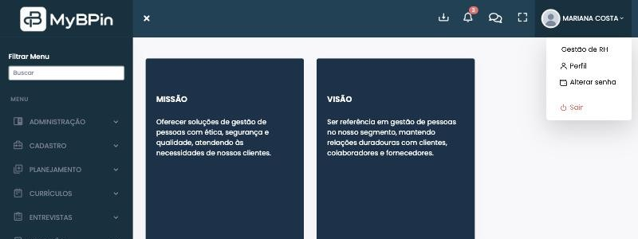
Notificações
O sino lista os avisos do sistema, como “Seu excel está pronto” ou “Importação de treinamentos concluída”, com um resumo do resultado.
Meus Downloads
As exportações são processadas em segundo plano. Quando ficam prontas, aparecem em Meus Downloads, com o local de origem, a data e o botão Download.
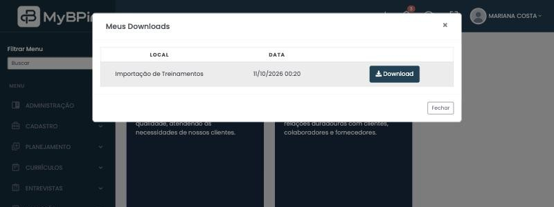
1.5 Alterar a senha
Menu do usuário › Alterar senhaA tela mostra a política de senhas e o botão Alterar Minha Senha, que abre o formulário de troca. A nova senha precisa ter:
- 8 ou mais caracteres;
- 1 letra minúscula e 1 letra MAIÚSCULA;
- 1 número;
- 1 símbolo especial (por exemplo @ $ ! % * ? &).
Não reutilize a senha atual e evite informações pessoais (nome, data de nascimento) e sequências simples.
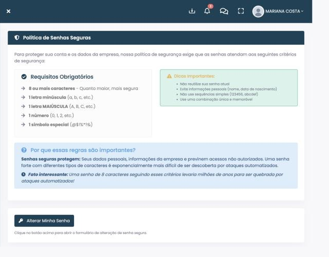
2. Padrões das telas
Quase todas as telas do MyBPIN seguem a mesma estrutura. Entender esse padrão uma vez serve para o sistema inteiro.
2.1 Bloco FILTRO
No topo de cada listagem há um bloco FILTRO com os campos de busca daquela tela. Preencha o que quiser e clique em Buscar ou Atualizar (botão verde). Em algumas telas há também:
- Mais filtros — abre o bloco Outros filtros, com os filtros menos usados; Menos filtros recolhe;
- Limpar filtros — volta a listagem ao estado inicial;
- caixa Por período — ao marcar, libera os campos de data inicial e final;
- Exibir / Por página — quantidade de registros por página.
2.2 Listagem em cards ou em tabela
Os resultados aparecem como cards (um bloco por registro) ou como tabela. Em ambos os casos:
- o selo de status (Ativo, Inativo, Pendente RH, Integrado, Em aberto…) mostra a situação do registro;
- o botão de três pontos (⋮) ou os ícones à direita abrem as ações daquele registro (Editar, Visualizar, Aprovar, Gerar PDF…);
- no rodapé ficam o Total encontrado(s) e o seletor de Página.
2.3 Cadastrar e editar
- Cadastrar: o botão ao lado de Atualizar (Cadastrar, + Cadastrar Cargo, Solicitar…) abre o formulário em branco. O título da janela começa com “Cadastrando…”.
- Editar: em ⋮ › Editar (ou no ícone de lápis da linha) o mesmo formulário abre preenchido, com o título “Alterando…”. O botão de gravação passa a ser Alterar ou Salvar.
- Ativar/inativar: o campo Ativo tira o registro de uso sem apagá-lo.
- Campos marcados com * são obrigatórios. Use Fechar ou Cancelar para sair sem gravar.
2.4 Fluxos de aprovação
Requisições de vaga e movimentações passam por etapas de aprovação. O card mostra em que etapa a solicitação está e quem já aprovou; quem tem a etapa pendente encontra a ação Aprovar no menu ⋮. O detalhamento está no capítulo 5.
2.5 Exportações
Onde existe o botão Exportar Excel (ou Exportar PDF), o arquivo é gerado em segundo plano respeitando os filtros aplicados. Quando fica pronto, o sistema avisa pelo sino e o arquivo fica disponível em Meus Downloads, na barra superior.
2.6 Anexos
Os campos de arquivo aceitam arrastar o arquivo para a área indicada ou clicar em Escolher. O tamanho e os formatos aceitos aparecem logo abaixo do campo.
3. Administração
O menu Administração reúne os cadastros de empresas parceiras, a documentação legal, o modelo da carta oferta e as rotinas de apoio do dia a dia (atas, planejamento e aniversariantes).
3.1 Fornecedores
Administração › FornecedoresCadastro das empresas e pessoas que prestam serviço ou se relacionam com a sua operação: fornecedores, parceiros e terceiros. Esses registros são usados em outros pontos do sistema, como o encaminhamento de exames e os treinamentos.
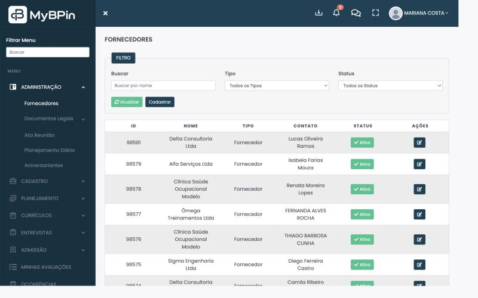
Filtros
| Filtro | O que faz |
|---|---|
| Buscar | Localiza pelo nome (razão social ou nome fantasia). Digite parte do nome. |
| Tipo | Restringe a um tipo de cadastro: Fornecedor, Parceiro, Parceiro Externo ou Terceiro. “Todos os Tipos” mostra tudo. |
| Status | Apenas Ativos, Apenas Inativos ou Todos os Status. |
Depois de ajustar os filtros, clique em Atualizar.
Colunas da listagem
ID (código do cadastro), Nome, Tipo, Contato (responsável), Status (Ativo/Inativo) e Ações, com o ícone de lápis para editar.
Cadastrar ou editar
Clique em Cadastrar para um registro novo ou no ícone de lápis para alterar um existente. O formulário é o mesmo nos dois casos.
- Tipo: em Selecione o Tipo, escolha Fornecedor, Parceiro, Parceiro Externo ou Terceiro.
- Dados do fornecedor: escolha se é Pessoa Jurídica ou Pessoa Física, informe o CNPJ (ou CPF), a Razão Social e o Nome Fantasia. Na edição, tipo de pessoa e documento ficam bloqueados.
- Endereço: digite o CEP * e clique na lupa para preencher o endereço automaticamente. Complete Endereço *, Número, Complemento, Bairro *, Município * e UF *.
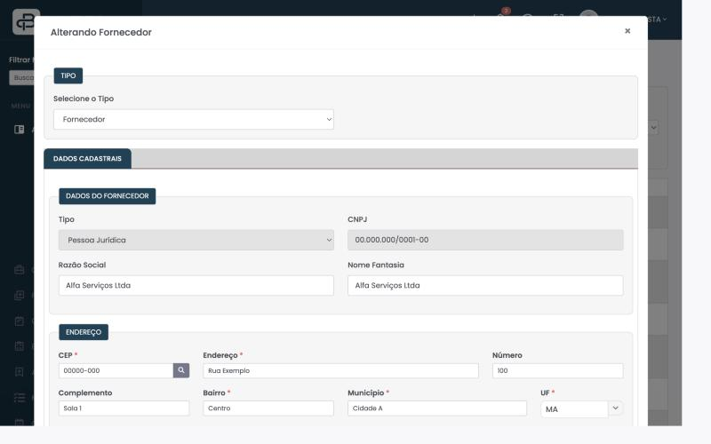
- Contatos: informe o Responsável e o E-mail.
- Telefones: escolha o Tipo * (por exemplo, WhatsApp), o Número * e uma observação. Ligue Principal no telefone preferencial. Use + Adicionar para incluir outro telefone e o botão vermelho ✕ para remover.
- Anexos: arraste um arquivo ou clique em Anexar… para guardar documentos do fornecedor (até 5120 MB por arquivo).
- Mantenha a chave Ativo ligada e clique em Alterar (ou Cadastrar).
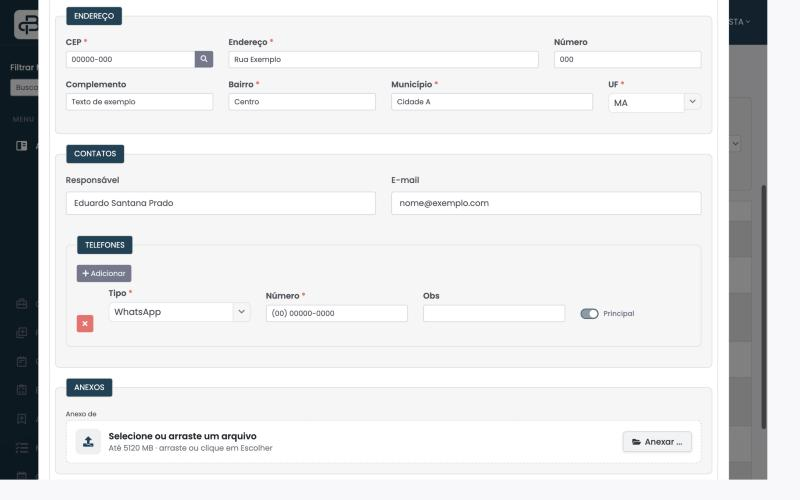
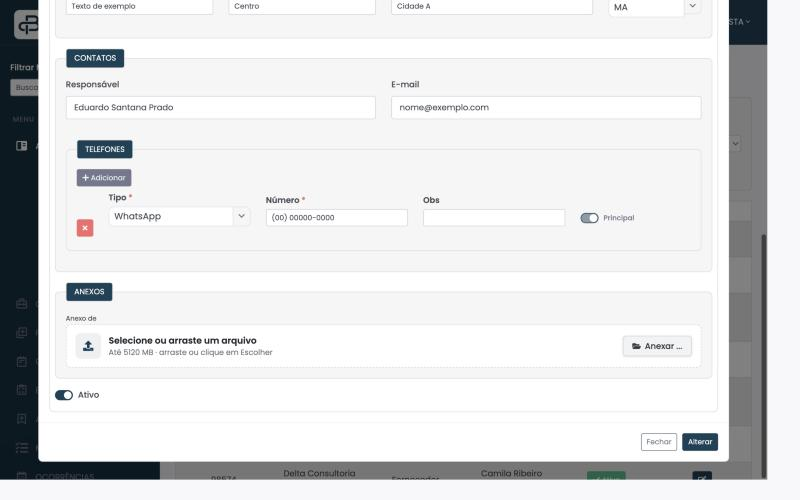
3.2 Documentos Legais
Administração › Documentos LegaisGrupo de telas para controlar contratos e documentos com prazo de validade. O submenu tem seis itens: três de documentos (Contrato, Documentos Empresa e Documentos SSMA) e três tabelas de apoio (Tipos Documentos, Tipos Serviços e Formas Contratos). Cadastre primeiro as tabelas de apoio; elas alimentam as listas de escolha dos documentos.
Contrato
Administração › Documentos Legais › ContratoCadastro dos contratantes e dos serviços contratados.
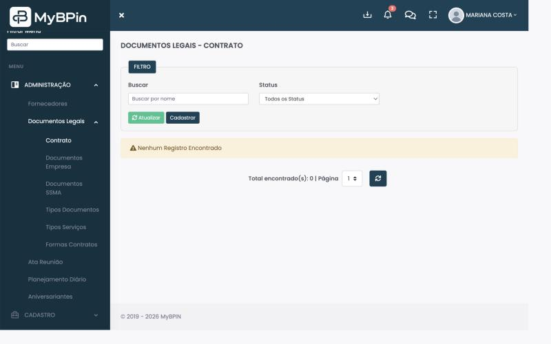
| Filtro | O que faz |
|---|---|
| Buscar | Localiza o contrato pelo nome do contratante. |
| Status | Apenas Ativos, Apenas Inativos ou Todos os Status. |
O formulário (Cadastrar) tem duas abas:
- Dados cadastrais — Dados do contratante (Tipo de pessoa, CNPJ, Razão Social, Nome Fantasia, Área de Atuação: Industrial, Comércio ou Serviços, e Ramo), Endereço, Contatos, Telefones e Upload da logo do contratante.
- Serviços — em Serviços contratados, use + Adicionar Serviço para listar cada serviço previsto no contrato.
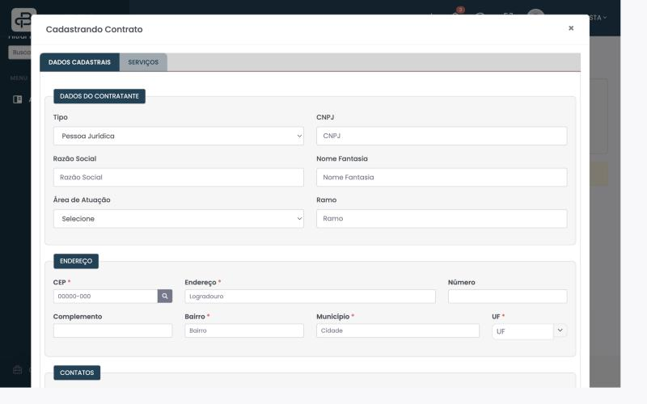
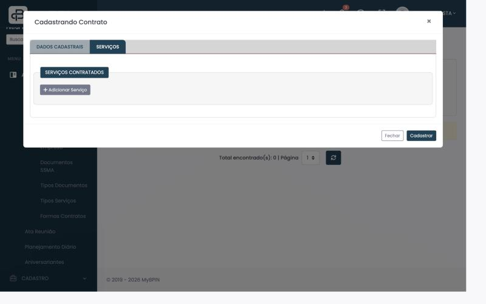
Documentos Empresa e Documentos SSMA
Administração › Documentos Legais › Documentos Empresa … › Documentos SSMAAs duas telas funcionam da mesma forma: uma guarda os documentos legais da empresa, a outra os documentos de Saúde, Segurança e Meio Ambiente. Os filtros são Buscar (por nome) e Status.
- Clique em Cadastrar.
- Em Selecione o Tipo, indique se o documento é da Empresa ou de um Contrato. O restante do formulário aparece depois dessa escolha.
- Na aba Documentos Legais, informe a Data Início, a Data Vencimento, o Tipo de documento e, se quiser, uma Observação.
- Em Anexo(s), arraste o arquivo ou clique em Escolher.
- Defina o Status (Iniciado, Concluído ou Não iniciado) e se o registro está Ativo.
- A aba Configurações reúne os parâmetros do documento. Grave com Cadastrar.
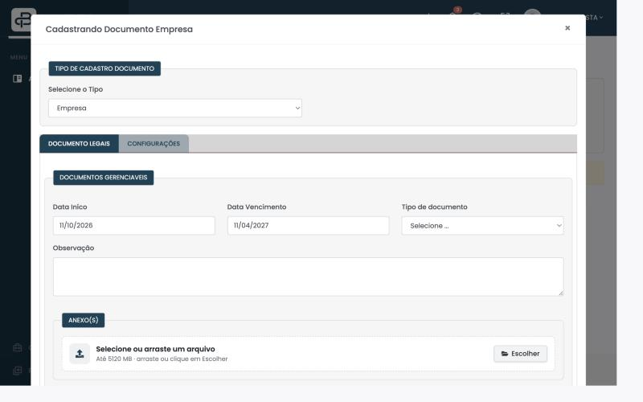
Tipos Documentos
Administração › Documentos Legais › Tipos DocumentosLista de tipos usada no campo “Tipo de documento”. A listagem mostra Nome, Tipo, Ativo e Opções (editar), com busca por nome.
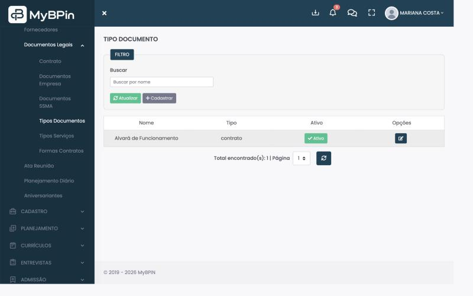
No cadastro, informe o Nome, escolha em Selecione o Tipo a que grupo ele pertence (Contrato, Empresa ou SSMA) e mantenha Ativo ligado.
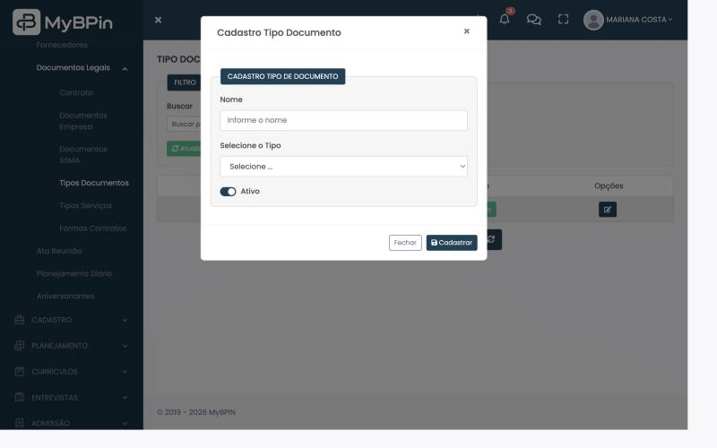
Tipos Serviços e Formas Contratos
… › Tipos Serviços … › Formas ContratosDuas tabelas simples, com busca por nome. Em ambas o cadastro pede apenas o Nome e a chave Ativo. Os tipos de serviço aparecem na aba Serviços do contrato; as formas de contrato classificam a modalidade contratada.
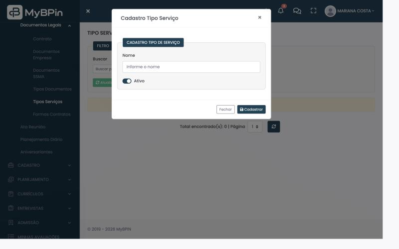
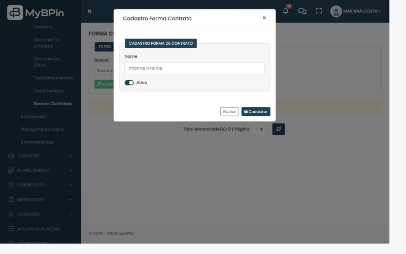
3.3 Documentos para Assinatura (assinatura digital)
Administração › Documentos Legais › Documentos para AssinaturaPainel de gerenciamento da assinatura digital. Reúne todos os documentos enviados para assinatura pelo sistema, de qualquer módulo, com a situação de cada signatário e a trilha de auditoria. Este menu aparece para as empresas com a assinatura digital habilitada.
Os documentos chegam aqui a partir de outros pontos do sistema, por exemplo a Carta Oferta (seção 8.1) e os documentos do dossiê do colaborador, em Histórico (seção 8.9).
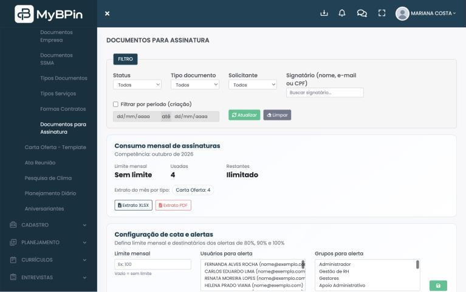
Filtros
| Filtro | O que faz |
|---|---|
| Status | Rascunho, Enviado, Em assinatura, Concluído, Cancelado ou Expirado. |
| Tipo documento | Contrato (Documentos Legais), Contrato de Trabalho, Carta Oferta, Termo de Demissão, Ficha de Encaminhamento, Termo de Confidencialidade, Opção Vale Transporte, Acordo de Compensação de Horas, Termo Salário Família, Declaração Dependentes IR, Medida Administrativa e Documento de Demissão (Aviso Prévio). |
| Solicitante | Quem enviou o documento para assinatura. |
| Signatário | Busca pelo nome, e-mail ou CPF de quem assina. |
| Filtrar por período (criação) | Ao marcar, considera os documentos criados entre as duas datas. |
Atualizar aplica os filtros e Limpar volta ao estado inicial.
Consumo mensal de assinaturas
O quadro mostra a competência (mês atual), o limite mensal, quantas assinaturas já foram usadas e quantas restam, além do extrato do mês por tipo de documento. Extrato XLSX e Extrato PDF baixam o detalhamento.
Configuração de cota e alertas
- Em Limite mensal, informe a quantidade máxima de assinaturas por mês. Em branco, não há limite.
- Em Usuários para alerta e Grupos para alerta, selecione quem deve ser avisado.
- Clique no botão verde de salvar.
Os destinatários recebem alertas quando o consumo atinge 80%, 90% e 100% do limite.
Cards dos documentos
Cada card traz o número, o documento, o selo de status, o aviso de pendência quando ainda falta assinar, o Solicitante, a data de criação e a última atualização. Em Signatários, cada pessoa aparece com o ícone da sua situação (relógio = pendente, check = assinou) e o e-mail. Ordem indica se as assinaturas seguem uma sequência.
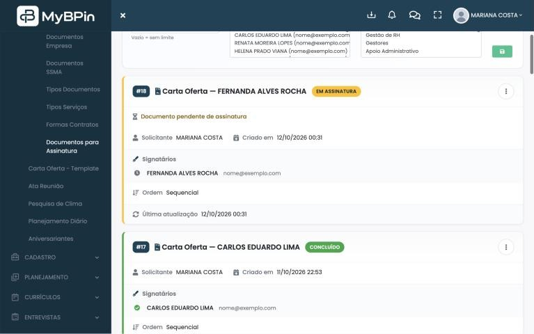
Ações do card
| Ação (menu ⋮) | O que faz |
|---|---|
| Ver detalhes e eventos | Abre o documento com os signatários e a trilha de auditoria. |
| Cancelar documento | Cancela o envio. Disponível enquanto o documento não foi concluído. |
| Reenviar e-mail | Manda de novo o link de assinatura aos signatários pendentes. |
| Baixar documento assinado | Baixa o PDF final. Disponível quando o documento está concluído. |
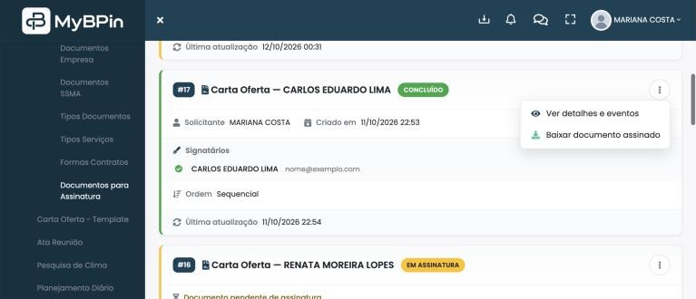
Detalhes e eventos (auditoria)
A janela mostra o ID, o tipo, o status, o solicitante e a data de criação. Em Signatários, a tabela traz a ordem, o nome, o e-mail e o status de cada um.
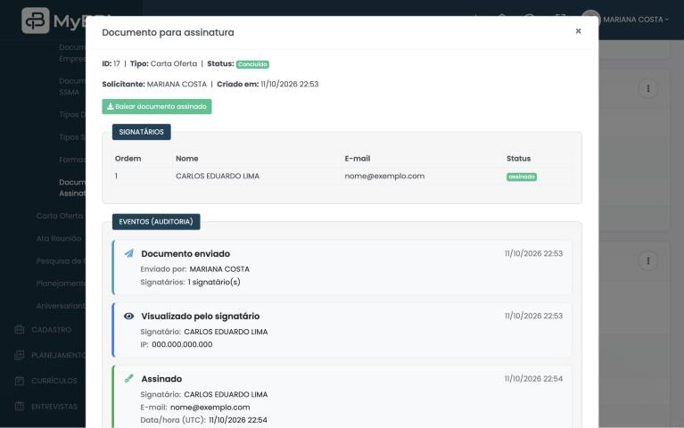
Em Eventos (auditoria), cada passo fica registrado com data e hora:
| Evento | O que registra |
|---|---|
| Documento enviado | Quem enviou e para quantos signatários. |
| Visualizado pelo signatário | Quem abriu o documento e o endereço IP. |
| Assinado | Signatário, e-mail, data e hora (UTC), endereço IP e o hash de evidência da assinatura. |
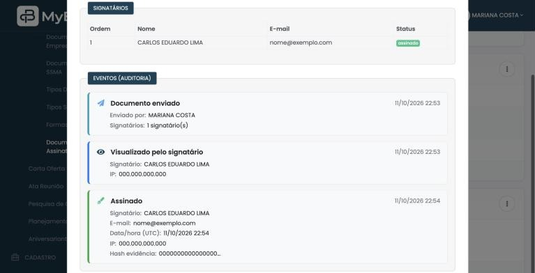
3.4 Carta Oferta - Template
Administração › Carta Oferta - TemplateDefine o texto padrão da Carta Oferta, o documento em que a empresa formaliza a proposta de trabalho ao candidato. É este modelo que o sistema usa ao gerar cada carta em Admissão › Documentos › Carta Oferta (seção 8.1).
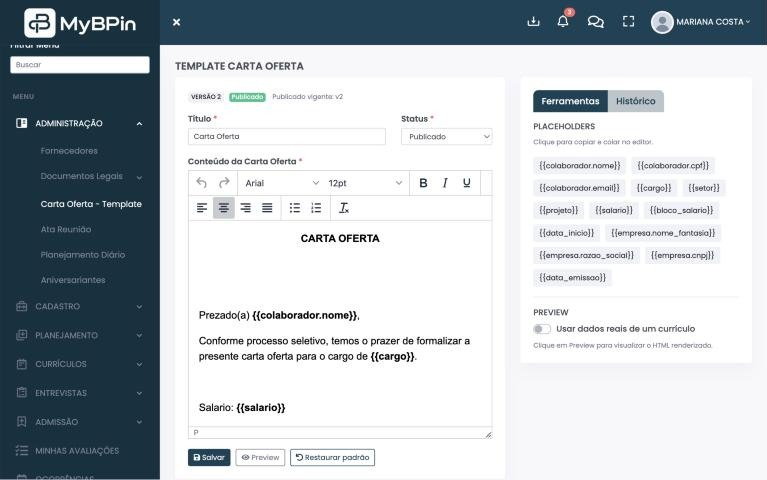
Editar o template
- Informe o Título *.
- Escreva o Conteúdo da Carta Oferta * no editor. A barra de ferramentas permite escolher fonte e tamanho, negrito, itálico, sublinhado, alinhamento e listas.
- Onde o texto deve trazer um dado do candidato ou da vaga, insira um placeholder: clique nele no painel Ferramentas para copiar e cole no editor.
- Em Status *, escolha Rascunho enquanto estiver montando ou Publicado para colocar em uso.
- Clique em Salvar. Cada gravação gera uma nova versão.
No topo, os selos mostram a versão aberta, o status e qual versão é a publicada vigente. Restaurar padrão traz de volta o texto original do sistema.
Placeholders
São os campos trocados automaticamente pelos dados reais quando a carta é gerada:
| Placeholder | É substituído por |
|---|---|
{{colaborador.nome}} | Nome do candidato. |
{{colaborador.cpf}} | CPF do candidato. |
{{colaborador.email}} | E-mail do candidato. |
{{cargo}} | Cargo da vaga. |
{{setor}} | Setor informado na carta. |
{{projeto}} | Projeto vinculado. |
{{salario}} / {{bloco_salario}} | Salário informado na carta; o bloco traz o trecho completo de salário. |
{{data_inicio}} | Data de início prevista. |
{{empresa.nome_fantasia}}, {{empresa.razao_social}}, {{empresa.cnpj}} | Dados da empresa. |
{{data_emissao}} | Data em que a carta é emitida. |
Preview
Preview mostra, ao lado, como a carta fica depois da troca dos placeholders. Por padrão usa dados simulados; ligue Usar dados reais de um currículo para conferir com um candidato de verdade.
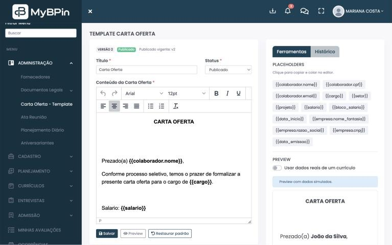
Histórico de versões
A aba Histórico lista as versões anteriores, com status, data e quem salvou. Usar carrega a versão no editor para ser ajustada e salva como nova.
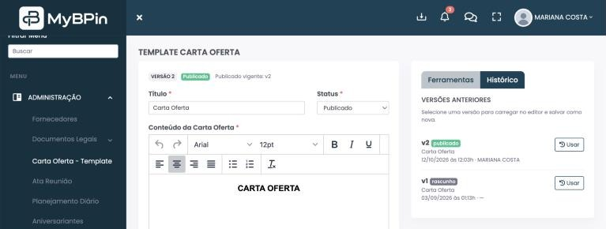
3.5 Ata Reunião
Administração › Ata ReuniãoRegistro das reuniões da equipe. A listagem tem busca por nome e o botão + Cadastrar Ata de Reunião.
- Em Informações, escolha a Área e o Centro de Custo, informe o Local e as datas de Início e Fim.
- Use os botões abaixo para montar o conteúdo da ata. Cada clique abre um novo bloco:
- + Adicionar Assuntos — os temas tratados;
- + Adicionar Comentários / Assuntos Pendentes / Próxima Reunião — o que ficou em aberto;
- + Ações - Próximos passos — as ações combinadas;
- + Participantes — quem esteve presente.
- Clique em Cadastrar.
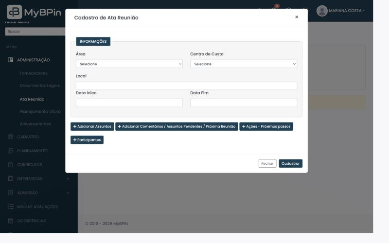
3.6 Planejamento Diário
Administração › Planejamento DiárioAgenda de tarefas do dia. A busca procura pelo conteúdo do planejamento. Em + Cadastrar Planejamento Diário, informe a data de Início, descreva as Tarefas Agendadas e o que é Importante. O botão + Adicionar Tarefa inclui tarefas individuais na lista.
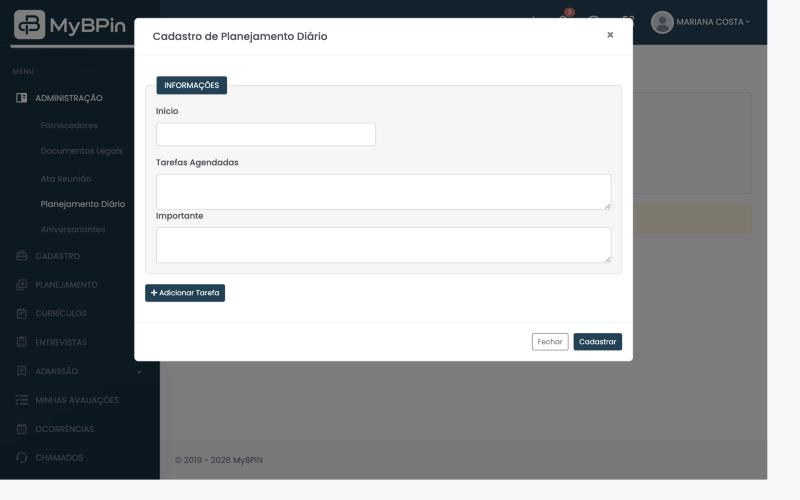
3.7 Aniversariantes
Administração › AniversariantesLista os aniversariantes do mês corrente, com Data, E-mail, WhatsApp e a situação do envio da mensagem de parabéns. As linhas em verde já receberam a mensagem.
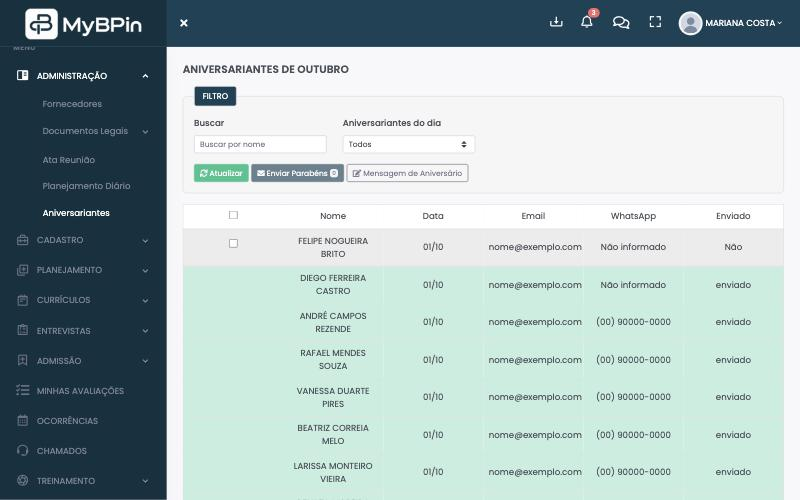
| Filtro | O que faz |
|---|---|
| Buscar | Localiza o colaborador pelo nome. |
| Aniversariantes do dia | Sim mostra apenas quem faz aniversário hoje; Não mostra os demais dias do mês; Todos mostra o mês inteiro. |
Enviar os parabéns
- Marque a caixa de seleção de cada colaborador (ou a do cabeçalho, para marcar todos). Quem já recebeu não pode ser marcado de novo.
- Clique em Enviar Parabéns. O número no botão mostra quantos estão selecionados.
Personalizar a mensagem
- Clique em Mensagem de Aniversário. O editor abre na própria tela.
- Escreva o texto. Use os marcadores
{{nome}}e{{empresa}}onde o sistema deve inserir o nome do colaborador e o da empresa. - Clique em Preview para conferir como ficará e em Salvar para gravar.
Enquanto nenhuma mensagem for personalizada, o sistema usa o texto padrão. O assunto do e-mail é sempre “Nome da empresa – Feliz Aniversário”. Para fechar o editor, clique em Ocultar mensagem.
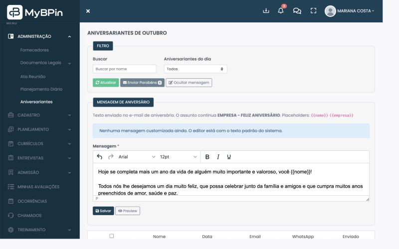
4. Cadastros
Os cadastros são a base do sistema: cargos, áreas, centros de custo, benefícios, treinamentos e avaliações definidos aqui aparecem como opções em todos os outros módulos. Uma requisição de vaga, por exemplo, só pode ser aberta para um cargo, uma área e um centro de custo já cadastrados. Comece a implantação por este menu.
4.1 Áreas
Cadastro › ÁreasAs áreas representam os setores da empresa. Cada uma tem um Gestor responsável, um Centro de custo e o telefone do Supervisor, que é impresso na etiqueta do colaborador.
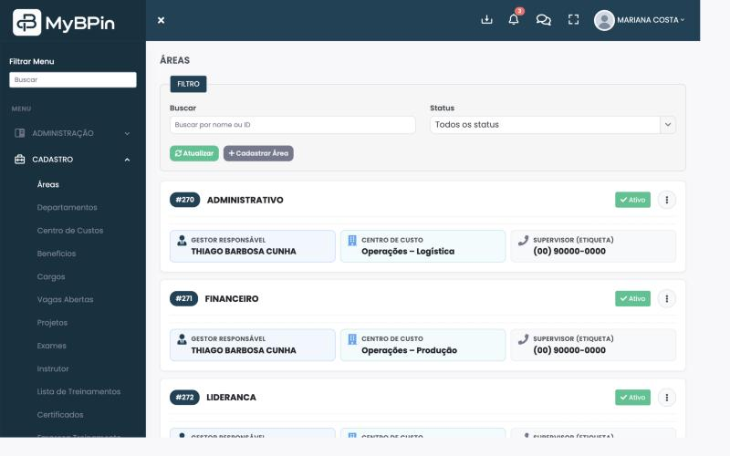
| Filtro | O que faz |
|---|---|
| Buscar | Localiza pelo nome da área ou pelo número (ID) que aparece no selo do card. |
| Status | Ativo, Inativo ou todos os status. |
Cadastrar ou editar
- Clique em + Cadastrar Área, ou em ⋮ › Editar no card da área.
- Informe o Nome *.
- Em Contato supervisor para etiqueta, informe o telefone do supervisor.
- Em Gestor responsável, digite o nome e selecione na lista; o campo fica com ✓ verde quando o gestor foi reconhecido.
- Escolha o Centro de Custo da área.
- Mantenha Ativo ligado e clique em Alterar (ou Cadastrar).
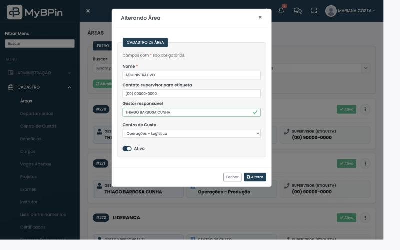
4.2 Departamentos
Cadastro › DepartamentosLista simples de departamentos. Os filtros são Buscar (por nome) e Status (Apenas Ativos, Apenas Inativos ou Todos). Para incluir, clique em + Departamento, informe o Nome e mantenha Ativo ligado.
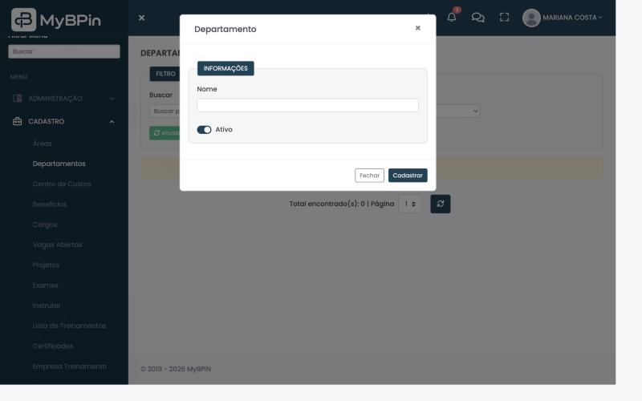
4.3 Centro de Custos
Cadastro › Centro de CustosCada centro de custo pertence a uma Lotação (o CNPJ da matriz ou de uma filial) e tem um Gestor principal e um Gestor substituto.
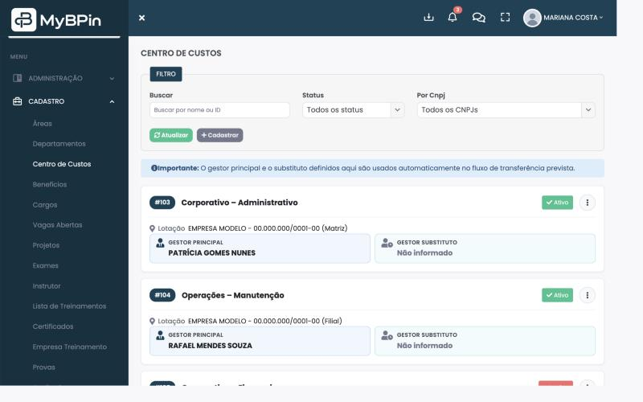
| Filtro | O que faz |
|---|---|
| Buscar | Localiza pelo nome ou pelo ID do centro de custo. |
| Status | Ativo, Inativo ou todos. |
| Por CNPJ | Mostra apenas os centros de custo de uma lotação (matriz ou filial). Clique no campo para escolher. |
Cadastrar ou editar
- Clique em + Cadastrar ou em ⋮ › Editar.
- Informe o Nome *.
- Em Gestor responsável, digite e selecione o gestor principal.
- Em Gestor substituto, selecione quem assume a aprovação quando o gestor principal estiver indisponível.
- Em CNPJ *, selecione a matriz ou a filial à qual o centro de custo pertence.
- Clique em Salvar.
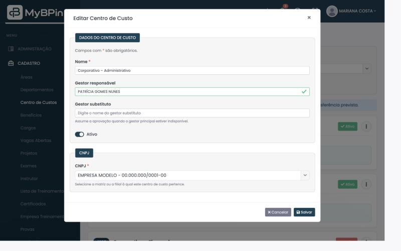
4.4 Benefícios
Cadastro › BenefíciosCatálogo dos benefícios que podem ser oferecidos nas vagas e concedidos aos colaboradores. Cada card mostra o Tipo, o Valor, a Periodicidade, a forma de Aplicação e o Desconto.
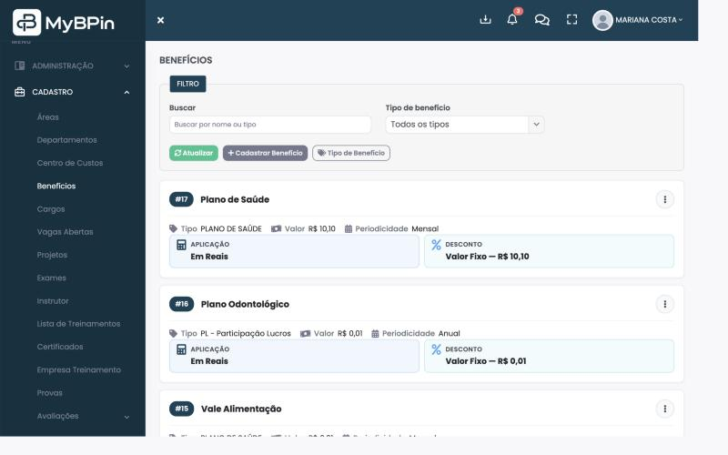
| Filtro | O que faz |
|---|---|
| Buscar | Localiza pelo nome do benefício ou pelo tipo. |
| Tipo de benefício | Mostra apenas os benefícios de um tipo. |
Cadastrar ou editar
- Se o tipo ainda não existe, clique em Tipo de Benefício e cadastre-o (nome e situação).
- Clique em + Cadastrar Benefício ou em ⋮ › Editar.
- Informe o Nome e escolha o Tipo.
- Informe o Valor e a Aplicação: Em Reais (valor fixo) ou Percentual do Salário.
- Escolha a Periodicidade: Diário, Semanal, Quinzenal, Mensal ou Anual.
- Informe o Valor Descontado do colaborador e a Opção de Desconto: Valor Fixo ou Percentual do Salário.
- Clique em Alterar (ou Cadastrar).
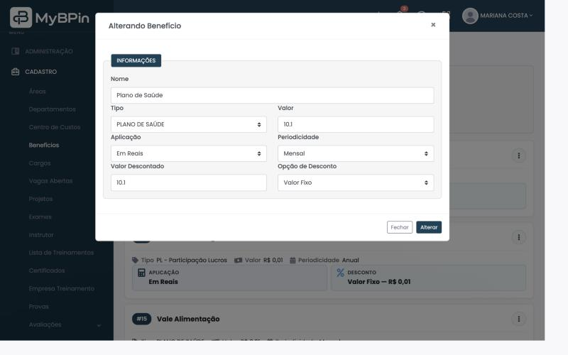
4.5 Cargos
Cadastro › CargosLista de cargos da empresa. Cada card mostra o CBO vinculado e a quantidade de treinamentos do cargo.
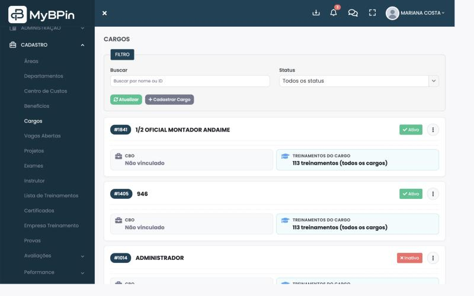
| Filtro | O que faz |
|---|---|
| Buscar | Localiza pelo nome do cargo ou pelo ID. |
| Status | Ativo, Inativo ou todos. Cargos inativos não aparecem para escolha em novas vagas e requisições. |
Cadastrar ou editar
- Clique em + Cadastrar Cargo ou em ⋮ › Editar.
- Em Sobre o cargo, informe o Título do cargo * (por exemplo, “Analista de RH”).
- Mantenha Ativo ligado. Para tirar um cargo de uso sem apagá-lo, desligue a chave.
- Em CBO (opcional), busque pelo código, título ou família da Classificação Brasileira de Ocupações e selecione.
- Clique em Alterar (ou Cadastrar).
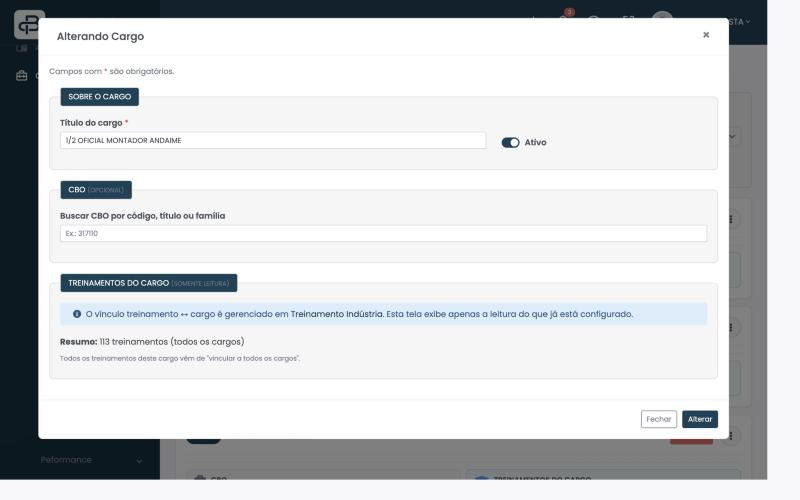
4.6 Vagas Abertas
Cadastro › Vagas AbertasÉ aqui que uma vaga é publicada para receber candidatos. Cada vaga aparece no portal de vagas da empresa (seção 6.1) e gera um link público de candidatura, que pode ser copiado ou compartilhado direto no WhatsApp, Facebook, Instagram e LinkedIn pelos ícones abaixo do link.

| Filtro | O que faz |
|---|---|
| Buscar | Localiza pelo título da vaga, cargo, cidade ou ID. |
| Ativo no site | Vagas publicadas (ou não) no site público de vagas. |
| Ativo no sistema | Vagas liberadas (ou não) para uso nos processos internos. |
| Cargo | Vagas de um cargo específico. |
| Cidade | Vagas de uma cidade — a lista traz apenas as cidades que têm vaga aberta. |
| Provas vinculadas | Vagas com ou sem prova vinculada. |
| Projeto | Vagas vinculadas a um projeto. |
Em cada card você vê o Cargo, o Local, a data de atualização, a Descrição e três indicadores: Treinamentos do cargo, Provas vinculadas e Projetos vinculados. Os selos Ativo site e Ativo sistema mostram onde a vaga está valendo.
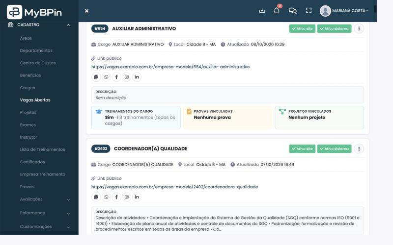
Cadastrar ou editar
- Clique em + Cadastrar Vaga Aberta ou em ⋮ › Editar.
- Em Cargo *, digite e selecione o cargo. A faixa Treinamentos vinculados ao cargo pode ser aberta para conferir os treinamentos exigidos.
- Informe o Título * — é o nome que o candidato verá.
- Escreva a Descrição no editor (atividades, requisitos, benefícios).
- Em Cidade *, digite e selecione o município.
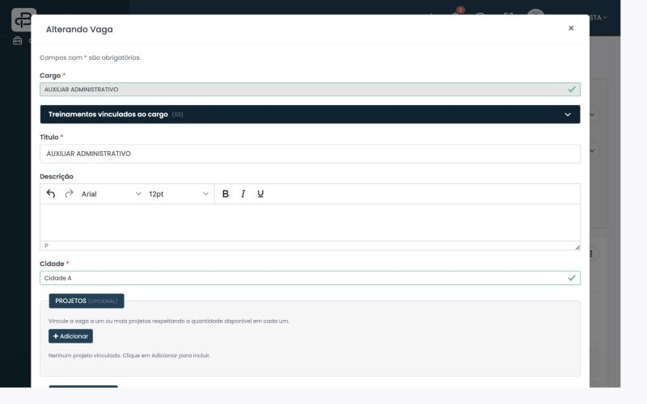
- Em Projetos (opcional), clique em + Adicionar para vincular a vaga a um ou mais projetos, respeitando a quantidade disponível em cada um.
- Em Provas (opcional), clique em + Adicionar para vincular provas que o candidato fará.
- Defina a publicação com as chaves Ativo no site e Ativo no sistema.
- Clique em Alterar (ou Cadastrar).
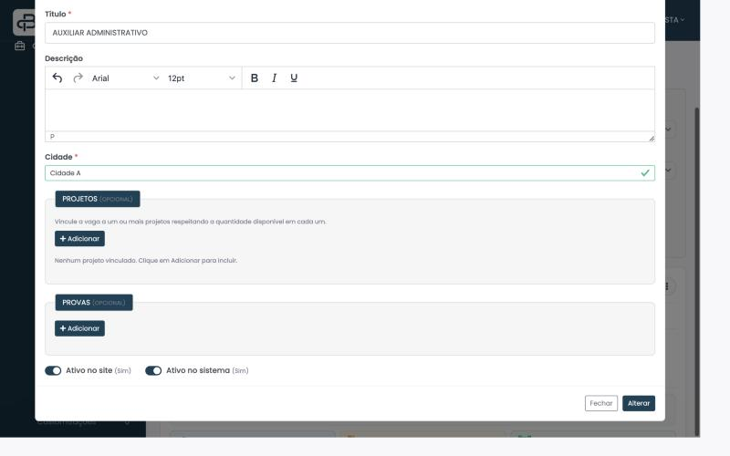
4.7 Projetos
Cadastro › ProjetosUm projeto define uma capacidade de posições a preencher e permite distribuir essa capacidade entre vagas abertas.
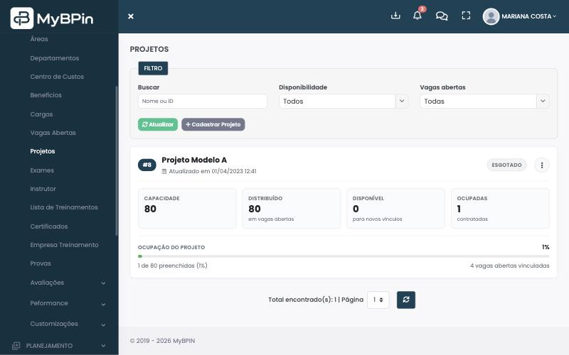
| Filtro | O que faz |
|---|---|
| Buscar | Localiza pelo nome ou ID do projeto. |
| Disponibilidade | Projetos com vagas ainda disponíveis ou já esgotados. |
| Vagas abertas | Projetos com ou sem vagas abertas vinculadas. |
Os números do card:
- Capacidade — tamanho total do projeto;
- Distribuído — quanto já foi reservado em vagas abertas;
- Disponível — quanto ainda pode ser vinculado a novas vagas;
- Ocupadas — posições já contratadas.
O selo Esgotado aparece quando toda a capacidade já foi distribuída.
Cadastrar ou editar
- Clique em + Cadastrar Projeto ou em ⋮ › Editar.
- Informe o Nome do projeto * e a Capacidade total *. A capacidade não pode ser menor do que o total já distribuído.
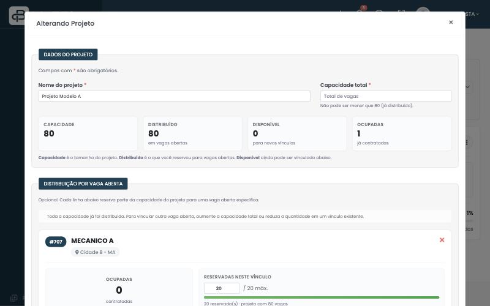
- Em Distribuição por vaga aberta (opcional), cada linha reserva parte da capacidade para uma vaga. Ajuste a quantidade em Reservadas neste vínculo; o ✕ vermelho remove o vínculo.
- Clique em Alterar.
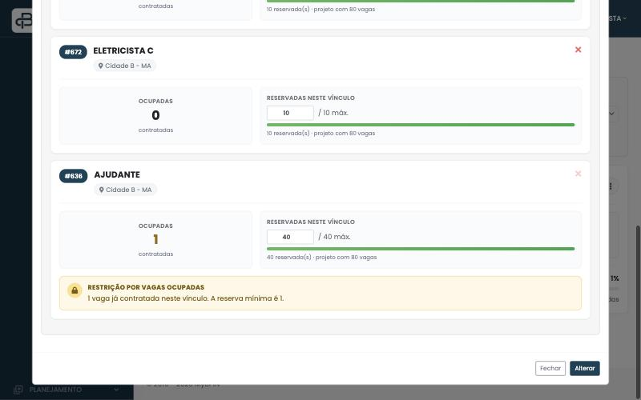
4.8 Exames (clínicas e PCMSO)
Cadastro › ExamesCadastro das clínicas de medicina ocupacional para onde os colaboradores são encaminhados. O e-mail cadastrado aqui é o que recebe os encaminhamentos de exame.
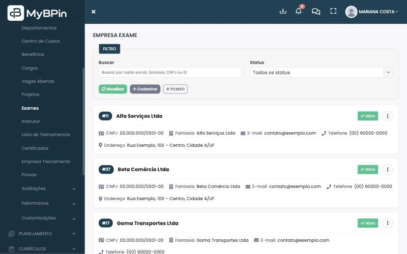
| Filtro | O que faz |
|---|---|
| Buscar | Localiza pela razão social, nome fantasia, CNPJ ou ID. |
| Status | Apenas Ativos, Apenas Inativos ou todos. |
Cadastrar ou editar uma clínica
Em + Cadastrar ou ⋮ › Editar, informe CNPJ, Razão Social e Nome Fantasia; o endereço (CEP * com busca pela lupa, Endereço *, Número, Complemento, Bairro *, Município *, UF *); o Telefone e o E-mail. Mantenha Ativo ligado.
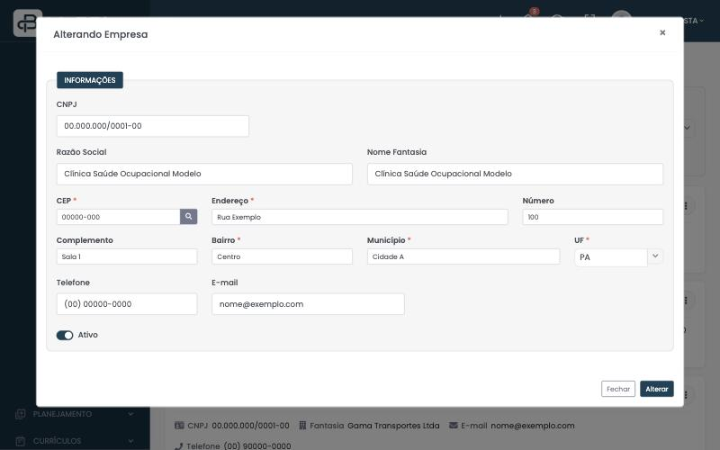
PCMSO
O botão + PCMSO abre a lista de programas de controle médico (PCMSO) usados no encaminhamento de exames. A janela tem busca por nome, filtro de Status, o botão + Cadastrar e o ícone de lápis para editar cada programa.
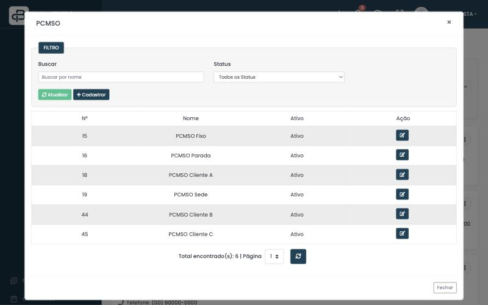
4.9 Instrutor
Cadastro › InstrutorInstrutores que ministram treinamentos e assinam os certificados. A listagem tem busca por nome. No cadastro (+ Instrutor) informe o Nome, o Cargo, o Registro profissional, a situação (Ativo: Sim/Não) e envie o arquivo da Assinatura, que será impressa nos certificados.
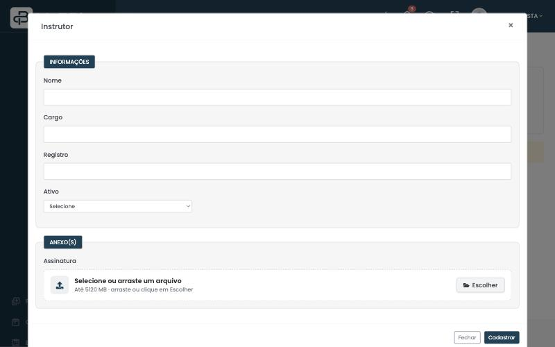
4.10 Lista de Treinamentos
Cadastro › Lista de TreinamentosCatálogo de treinamentos da empresa. É aqui que se define a validade de cada treinamento e para quais cargos ele é exigido.
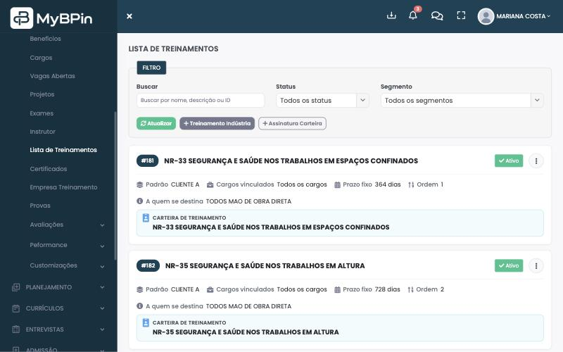
| Filtro | O que faz |
|---|---|
| Buscar | Localiza pelo nome, descrição ou ID do treinamento. |
| Status | Ativo, Inativo ou todos. |
| Segmento | Treinamentos de um segmento ou padrão (por exemplo, os exigidos por um cliente). |
Cada card mostra o Padrão (segmento), os Cargos vinculados, o Prazo fixo de validade em dias, a Ordem de exibição, A quem se destina e o nome usado na Carteira de treinamento.
Cadastrar ou editar
- Clique em + Treinamento Indústria ou em ⋮ › Editar.
- Informe o Nome *.
- Ligue Exibir Carteira Treinamento se ele deve ser impresso na carteira e informe o Nome Reduzido *, que é o texto impresso.
- Preencha A quem se destina *.
- Informe o Prazo fixo (dias para vencimento) — por exemplo, 365 — e a Ordem em que aparece nas listas.
- Escolha o Segmento / Padrão de treinamento.
- Ligue Vincular a todos os cargos se o treinamento vale para qualquer cargo. Desligado, escolha os cargos na lista que aparece.
- Mantenha Ativo e clique em Salvar.
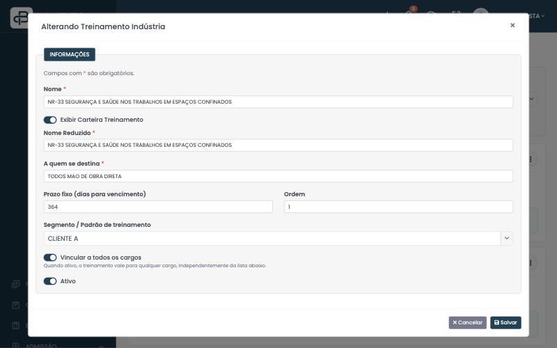
Assinatura da carteira
O botão + Assinatura Carteira lista as assinaturas impressas na carteira de treinamento, com Nome, Tipo (Gerente/RH ou Técnico de Segurança), Segmento e situação. Use + Cadastrar para incluir e o lápis para editar.
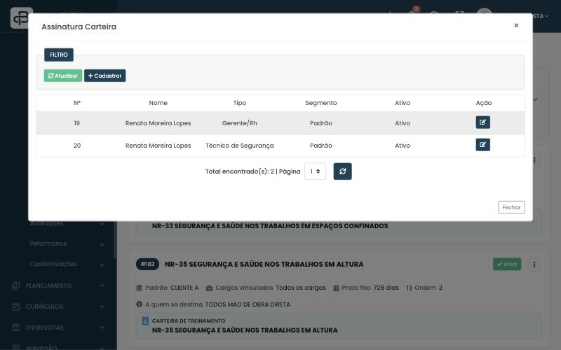
4.11 Certificados
Cadastro › CertificadosModelos de certificado emitidos pelo sistema (por exemplo NR-33 e NR-35). A listagem mostra Nome, Título do certificado, Carga horária e Validade, com busca por nome.
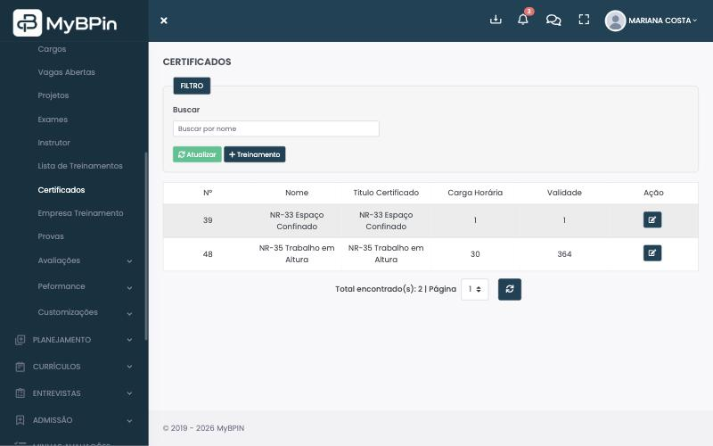
No cadastro (+ Treinamento) informe o Nome, o Título Certificado, o Conteúdo Abordado, o Conteúdo Programático, a Carga Horária (em horas) e a Validade (em dias). Esses textos são impressos no certificado.
4.12 Empresa Treinamento
Cadastro › Empresa TreinamentoEmpresas que ministram treinamentos. Listagem com busca por nome; no cadastro (+ Empresa Treinamento) informe Nome, Endereço e a situação (Ativo: Sim/Não).
4.13 Provas
Cadastro › ProvasProvas aplicadas aos candidatos e vinculadas às vagas abertas. Listagem com busca por título. Em + Cadastrar (janela “Montagem da Prova”), informe o Título, o Tipo da prova (Objetiva ou Subjetiva) e a situação. Depois de escolher o tipo, monte as questões.
4.14 Avaliações
Cadastro › Avaliações Cadastro › PeformanceOs grupos Avaliações e Peformance têm exatamente as mesmas quatro telas e são usados para ciclos diferentes de avaliação. Em ambos, a montagem segue esta ordem:
Tipos de Avaliadores
Definem quem pode avaliar: Par (colegas do mesmo nível), Gestão (líder avaliando o liderado), Autoavaliação e Subordinado (liderado avaliando o líder). Busca por nome; cadastro com Nome, Descrição e Ativo.
Tipos de Avaliações
São os modelos de avaliação (desempenho, experiência, liderança, 360°…). Busca por nome; cadastro com Nome, Descrição e Ativo.
Competências
As competências são os tópicos avaliados. A listagem mostra a Competência, a quantidade de indicadores e o tipo de avaliação a que pertence.
Em + Cadastrar (“Montagem de competência”), informe a Competência, a Descrição, o Tipo de avaliação em que ela será usada e a situação. Depois inclua os indicadores (as perguntas) da competência.
Avaliações (ciclos)
Cada linha é um ciclo de avaliação, com Ano, Título, Tipo, Data início, Data fim, Status e situação.
| Filtro | O que faz |
|---|---|
| Buscar | Localiza pelo título do ciclo. |
| Ano Avaliação | Ciclos de um ano específico. |
| Tipo Avaliação | Ciclos de um tipo de avaliação. |
| Status | Aguardando Início, Aberta ou Encerrada. |
Exportar Excel gera a planilha dos ciclos filtrados.
Montar um ciclo
- Clique em + Cadastrar.
- Em Informações, preencha o Título, o Tipo de avaliação, a Data Início e a Data Fim, o Status (Aguardando Início, Aberta ou Encerrada), se há Auto Avaliação, se está Ativo e o Ano.
- Em Fluxo, defina se o avaliador final verá as notas das etapas anteriores (Mostrar notas das etapas anteriores para o Avaliador Final).
- Em Tipo de avaliador, escolha cada etapa do fluxo, na ordem em que deve acontecer. Se Auto Avaliação estiver como Sim, ela ocupa automaticamente a primeira posição.
- Clique em Cadastrar.
Associar avaliadores
- Na listagem, abra ⋮ › Associar avaliadores no ciclo desejado.
- Localize os colaboradores pela busca ou filtre por Vinculados / Não vinculados.
- Marque os colaboradores e clique em Associar Avaliadores para indicar quem avalia cada um em cada etapa do fluxo.
4.15 Customizações
Campos personalizados da Requisição de Vaga
Cadastro › Customizações › Requisição de VagaPermite criar campos extras no formulário de requisição de vaga, de acordo com a necessidade da sua empresa — por exemplo, “E-mail institucional”, “Notebook” ou “Acesso a sistemas”.
- Clique em + Novo campo.
- Informe o Nome do campo (label) *, que é o texto exibido no formulário.
- Escolha o Tipo *: Sim / Não, Texto simples, Caixa de texto (várias linhas) ou Select (lista de opções que você define).
- Marque Campo obrigatório se o preenchimento for exigido e clique em Salvar.
Aprovações Extras
Cadastro › Customizações › Aprovações ExtrasInclui uma etapa adicional de aprovação entre o gestor e o RH para um tipo de processo.
Cada card mostra o tipo de processo, o nome da aprovação, as datas de criação e alteração, os usuários autorizados e o fluxo resultante. A busca localiza por nome ou tipo.
- Clique em + Cadastrar (ou ⋮ › Editar).
- Em Tipo de Processo *, escolha onde a etapa será incluída: Demissão, Férias, Mudança de Cargo, Transferência, Intermitente para Fixo, Valor Extra, Requisição de Vaga ou Admissão Prevista.
- Informe o Nome da Aprovação * (por exemplo, “SESMT” ou “Gerente”). Ele aparece no fluxo como “Aguardando aprovação do …”.
- Em Colaborador, selecione os usuários autorizados a aprovar essa etapa. Usuários com privilégio de RH também podem aprovar.
- Mantenha Ativo marcado e clique em Salvar.
5. Planejamento
O menu Planejamento concentra tudo o que precisa de aprovação antes de acontecer: a abertura de vagas e as movimentações de pessoal (demissão, férias, admissão prevista, valor extra, mudança de cargo, troca de contrato e transferência). Cada solicitação percorre um fluxo de aprovação visível no próprio card.
5.1 Como funciona o fluxo de aprovação
Toda solicitação nasce com o solicitante, passa pelo gestor e termina no RH. Se houver uma aprovação extra configurada para o tipo de processo (ver Cadastro › Customizações › Aprovações Extras), ela entra entre o gestor e o RH.
| No card | Significado |
|---|---|
| Etapa em verde, com nome e data | Etapa concluída — mostra quem aprovou e quando. |
| Etapa em laranja, “Aguardando” | É a etapa atual: a solicitação está parada com esse aprovador. |
| Etapa em cinza, “Pendente” | Etapa futura, ainda não alcançada. |
| Selo à direita do card | Resume a situação: Em aberto, Pendente Gestor, Aprovado Gestor, Pendente Gerente de RH, Pendente RH, Aprovado RH. |
As ações de aprovação ficam no menu ⋮ de cada card e só aparecem para quem tem permissão e quando a solicitação está na etapa correspondente.
5.2 Requisição de Vaga
Planejamento › Requisição de VagaÉ onde o gestor ou o RH formaliza a necessidade de contratação. Cada card mostra o cargo, a Quantidade, o Solicitante, o Gestor, a Lotação, o Centro de custo, a Área, a data da Solicitação, o tipo de Contratação, a Prioridade, a previsão de Início e o fluxo de aprovação.
Filtros
| Filtro | O que faz |
|---|---|
| Período | Ao marcar a caixa, libera as datas inicial e final para buscar requisições abertas nesse intervalo. |
| Pesquisar | Localiza pelo nome do cargo. |
| Status | Mostra apenas as requisições em uma situação do fluxo (em aberto, aprovadas pelo gestor, aprovadas pelo RH…). |
| Ordenar por | Define a ordem da lista; o padrão é Mais recentes. |
Clique em Buscar para aplicar. Exportar Excel gera a planilha das requisições filtradas.
Abrir uma requisição
- Clique em Solicitar.
- Informações: selecione o cargo * (digite e escolha na lista), a Área *, o Tipo de Contratação *, a Prioridade * e a Quantidade * de vagas.
- Lotação: escolha a Lotação (CNPJ) *. O Centro de Custo * é liberado depois dessa escolha e lista apenas os centros daquela lotação.
- Demais informações: Posição *, Processo *, Tipo *, Horário, Gestor da vaga *, se o cargo está no PPRA e PCMSO *, Salário *, Benefício * e Treinamento.
- Previsão de início: ligue Imediata se a vaga é para já; caso contrário, informe a data em Previsão *.
- Informe o Solicitante * e, se quiser, uma Observação.
- Clique em Cadastrar. A requisição entra na lista como Em aberto, aguardando o gestor.
Se a sua empresa criou campos personalizados para a requisição, eles aparecem neste mesmo formulário.
Ações de cada requisição
| Ação | O que faz |
|---|---|
| Visualizar | Abre a requisição completa, somente para leitura, com o parecer de cada etapa. |
| Aprovação Gestor | Abre a requisição para o gestor registrar a decisão. |
| Aprovação extra (nome configurado) | Aparece quando há uma etapa extra — no exemplo das telas, “Gerente de RH”. |
| Aprovação RH | Decisão final do RH. |
Na visualização, todos os campos aparecem preenchidos e bloqueados. Enquanto ninguém decidiu, o sistema avisa: “Esta solicitação ainda não foi aprovada ou reprovada pelo gestor!”.
Aprovar ou reprovar
- No menu ⋮, escolha a ação da sua etapa (por exemplo, Aprovação Gestor).
- Confira os dados da requisição e role até o final da janela.
- No bloco da sua etapa, escolha o Status * (aprovar ou reprovar) e escreva uma Observação. Os blocos das outras etapas ficam bloqueados.
- Clique em Aprovar para gravar a decisão.
5.3 Movimentação
Planejamento › MovimentaçãoReúne, em sete abas, as movimentações de pessoal que dependem de aprovação. Todas funcionam do mesmo jeito: filtros no topo, botão Solicitar para abrir uma nova solicitação, Exportar Excel e um card por solicitação, com o fluxo de aprovação.
| Aba | Para que serve |
|---|---|
| Demissão | Solicitar o desligamento de um colaborador. |
| Férias | Programar as férias de um colaborador. |
| Admissão | Registrar uma admissão prevista (contratação planejada). |
| Liderança de Pessoal e Valor Extra | Solicitar pagamento adicional por liderança ou outro valor extra. |
| Mudança de Cargo | Alterar cargo, função ou salário. |
| Mudança de Intermitente p/ Fixo | Converter um contrato intermitente em fixo. |
| Transferência | Mudar o colaborador de centro de custo ou de lotação. |
Filtros comuns a todas as abas
| Filtro | O que faz |
|---|---|
| Período | Ao marcar, libera as datas para buscar solicitações de um intervalo. |
| Colaborador / CPF | Localiza pelo nome ou pelo CPF do colaborador. |
| Status | Situação no fluxo (pendente gestor, pendente RH, aprovado, reprovado…). |
| Lotação (CNPJ) | Solicitações de uma matriz ou filial. |
| Centro de custo | Solicitações de um centro de custo. |
| Ordenar por | Ordem da lista; o padrão é Mais recentes. |
| Por página | Quantidade de solicitações exibidas por página. |
O menu ⋮ de cada card traz Visualizar e as ações de aprovação da etapa atual (por exemplo, Aprovação RH).
Aba Demissão
Cada card mostra a Data da demissão, o Tipo de aviso, o Cargo, a Lotação, o Centro de custo e o Gestor responsável.
Além de Visualizar e Aprovação RH, a demissão tem a ação Aviso Prévio (PDF), que gera o documento de aviso prévio.
Solicitar uma demissão
- Clique em Solicitar.
- Em Colaborador *, digite o nome e selecione. Centro de Custo Atual e Lotação são preenchidos automaticamente.
- Informe a Data da Demissão * e o Tipo de Aviso *.
- Em Gestor Aprovação *, selecione o gestor que deve aprovar.
- Em Detalhes, escreva a Observação e inclua Anexos (arraste o arquivo ou clique em Escolher).
- Clique em Cadastrar.
Aba Férias
Cada card mostra o período de Férias, a quantidade de Dias (e o saldo), o Período aquisitivo com a data limite, a Lotação, o Centro de custo e a data de Admissão.
Esta aba tem filtros próprios, além dos comuns:
| Filtro | O que faz |
|---|---|
| Período aquisitivo | Restringe aos períodos aquisitivos mais recentes; o padrão é Últimos 3 períodos. |
| Período cadastrado | Solicitações cadastradas entre duas datas. |
| Período de vencimento | Férias cujo prazo limite vence entre duas datas — útil para evitar férias vencidas. |
| Início das férias | Férias que começam entre duas datas. |
Solicitar férias
- Clique em Solicitar e selecione o Colaborador *.
- Escolha o Período Aquisitivo *.
- Indique em Tem Falta? se há faltas no período. O sistema calcula a Quantidade de dias disponíveis.
- Escolha os Dias de férias * e informe a Data da saída *. A Data do retorno e os Dias de saldo são calculados automaticamente.
- Indique se haverá Abono Pecuniário e Adiantamento do Décimo Terceiro.
- Selecione o Gestor Aprovação *, complete a observação e os anexos e clique em Cadastrar.
Aba Admissão
Registra as admissões previstas. Cada card mostra a Data de admissão, o Tipo de contrato, o Salário, a Lotação, o Centro de custo e o Solicitante. Esta aba tem um filtro a mais: Tipo contrato.
Solicitar uma admissão
- Clique em Solicitar.
- Em Colaborador, selecione o Cargo * e, se já souber, informe o Nome do Colaborador a ser admitido.
- Em Lotação, escolha a Lotação (CNPJ) * e o Centro de Custo *.
- Em Solicitação, informe o Tipo de admissão *, a Data admissão *, o Salário * e o Gestor Aprovação *.
- Complete observação e anexos e clique em Cadastrar.
Aba Liderança de Pessoal e Valor Extra
Cada card mostra o Colaborador, o Tipo do valor extra, o Período (em dias), a Lotação, o Centro de custo e o Solicitante.
Solicitar
- Clique em Solicitar e selecione o Colaborador *. A Lotação é preenchida automaticamente.
- Escolha o Centro de Custo.
- Informe o Tipo * do valor extra e o Período em dias *.
- Selecione o Gestor Aprovação *, complete observação e anexos e clique em Cadastrar.
Aba Mudança de Cargo
Cada card mostra a Lotação, o Centro de custo, as Alterações pedidas (por exemplo, Função · Salário), o Solicitante e as datas.
Para solicitar, clique em Solicitar e selecione primeiro o Colaborador *. Depois dessa escolha, o formulário mostra a situação atual do colaborador e os campos para informar o novo cargo, a nova função e o novo salário. Grave com Cadastrar.
Aba Mudança de Intermitente p/ Fixo
Cada card mostra o Cargo anterior, o Novo cargo, o Centro de custo, a Lotação, o Salário anterior, o Novo salário e o Solicitante.
Solicitar
- Clique em Solicitar e selecione o Colaborador *. Cargo anterior e Salário anterior são preenchidos automaticamente.
- Escolha a Lotação (CNPJ) * e o Centro de Custo *.
- Informe o Novo cargo * e o Novo salário.
- Selecione o Gestor Aprovação *.
- Descreva os Motivos para modificação, inclua anexos e clique em Salvar.
Aba Transferência
Cada card mostra o Centro de custo de origem e o de destino, a Data da transferência, a Lotação de origem e a de destino e o Solicitante.
Solicitar uma transferência
- Clique em Solicitar e selecione o Colaborador *.
- Confirme a Lotação origem * e o Centro de Custo Origem *.
- Escolha a Lotação destino * e o Centro de Custo Destino *.
- Informe a Data para transferência *.
- Em Gestores responsáveis, o sistema mostra automaticamente o gestor da origem e o do destino, conforme o cadastro de centros de custo.
- Complete observação e anexos e clique em Salvar.
5.4 Mobilização
Planejamento › MobilizaçãoAcompanha a mobilização de pessoal por projeto. A tela só exibe dados depois que um projeto é escolhido.
| Filtro | O que faz |
|---|---|
| Projeto | Obrigatório. Escolha o projeto que deseja acompanhar. |
| Período | Opcional. Ao marcar, restringe a consulta a um intervalo de datas. |
Selecione o projeto e clique em Buscar.
6. Currículos
O menu Currículos é a porta de entrada do processo seletivo. Os currículos chegam pelo portal de vagas da empresa, onde o próprio candidato se cadastra. Em Recrutamento ficam todos os currículos recebidos; em Selecionados, os candidatos que passaram pela triagem e seguem para as etapas de entrevista.
6.1 Portal de vagas: de onde vêm os currículos
Cada empresa tem um portal público de carreiras. É por ele que os candidatos conhecem as vagas e cadastram o currículo; tudo o que é enviado ali aparece em Currículos › Recrutamento.
Endereço do portal
O endereço segue o formato abaixo. A última parte é o nome da empresa configurado no sistema no momento do cadastro da empresa:
https://vagas.mybp.com.br/nome-da-empresa
Divulgue esse endereço no site, nas redes sociais e nos anúncios de vaga. Cada vaga também tem o seu próprio link, que pode ser copiado e compartilhado em Cadastro › Vagas Abertas (seção 4.6).
Página inicial
No topo ficam o logotipo da empresa e o menu Home, Sobre e Vagas Abertas. Logo abaixo, o bloco Quem somos apresenta a empresa com a Missão, a Visão e os Valores cadastrados no sistema.
Vagas abertas
A lista mostra todas as vagas ativas, com o nome e o local de cada uma, e informa quantas posições estão disponíveis para vaga ou cadastro reserva. O candidato pode filtrar:
| Filtro | O que faz |
|---|---|
| Estado | Mostra apenas as vagas de um estado. |
| Município | Mostra apenas as vagas de uma cidade do estado escolhido. |
| Buscar vaga | Procura pelo nome da vaga. |
Ao clicar em uma vaga, ela se expande e mostra o bloco Sobre a vaga, com a descrição cadastrada, e o botão Candidatar-se.
Candidatura
- O candidato clica em Candidatar-se. Abre a página da vaga, com o nome, o local e a descrição.
- No quadro Comece seu cadastro, informa o CPF * e a data de Nascimento *. Ao continuar, declara que leu e concorda com os Termos de Uso.
- Clica em Continuar. O formulário do currículo abre na mesma página.
Formulário do currículo
O formulário é dividido em sete blocos numerados. No topo, o quadro Informações importantes lembra duas regras: cadastrar um e-mail válido (e-mail inválido ou inexistente implica desclassificação) e adicionar no mínimo dois contatos, sendo pelo menos um WhatsApp.
| Bloco | O que o candidato informa |
|---|---|
| 1. Dados pessoais | Nome *, CPF * e Nascimento * (já preenchidos, sem edição), RG, Data de emissão e Órgão expedidor do RG, Naturalidade *, CNH, Sexo *, Nome do pai, Nome da mãe * e E-mail *. |
| 2. Endereço | CEP * (a lupa busca o endereço), Endereço *, Número, Complemento, Bairro *, Município * e UF *. |
| 3. Contato | Para cada contato: Tipo * (WhatsApp, Celular, Residencial ou Comercial), Telefone *, Observação e a chave Principal. + Adicionar contato inclui outro; Remover exclui. |
| 4. Formação | Formação * (escolaridade), Instituição *, Curso * e Status * (Concluído, Cursando ou Trancado). |
| 5. Experiências | Aparece quando o candidato responde Sim em Possui experiências?. Cada experiência é incluída em + Adicionar experiência. |
| 6. Qualificações | Aparece quando responde Sim em Possui qualificações?. Cada curso é incluído em + Adicionar qualificação. |
| 7. Outras informações | Cota pessoa com deficiência (Lei nº 8.213/91) * e disponibilidade para viajar *, para trabalhar aos sábados * e aos domingos *. |
Para concluir, o candidato clica em Salvar candidatura. A partir daí o currículo fica disponível para o RH em Currículos › Recrutamento (seção 6.2), vinculado à vaga escolhida.
O que o candidato informa aqui é exatamente o que o RH vê na janela Visualizando Currículo, ao usar a ação Recrutar.
Na mesma página, os ícones de compartilhar permitem copiar o link da vaga ou enviá-lo por WhatsApp, Facebook, Instagram e LinkedIn. No rodapé do portal ficam a Política de privacidade e os Termos de uso.
6.2 Recrutamento
Currículos › RecrutamentoBanco de currículos. No topo, três indicadores resumem a base:
- Total cadastrados — todos os currículos com vaga;
- Cadastrados — recebidos nos últimos 90 dias;
- Selecionados — selecionados nos últimos 90 dias, com o percentual sobre os cadastrados.
Filtros
| Filtro | O que faz |
|---|---|
| Por período | Ao marcar, libera as datas para buscar currículos cadastrados em um intervalo. |
| Candidato / CPF | Localiza pelo nome ou pelo CPF do candidato. |
| Cargo | Currículos enviados para um cargo. |
| Estado | Currículos de candidatos de um estado (UF). |
| Lido | Separa os currículos já abertos pela equipe dos ainda não lidos. Geral mostra todos. |
| PCD | Mostra apenas candidatos PCD, apenas não PCD, ou todos (Geral). |
| Exibir | Quantidade de currículos por página. |
Exportar Excel gera a planilha dos currículos filtrados.
O card do currículo
Cada card traz o código, o nome do candidato e o selo Lido / Não lido, além de:
| Campo | Significado |
|---|---|
| CPF, UF, Vaga | Identificação do candidato e a vaga para a qual se candidatou. |
| PCD | Se o candidato se declarou pessoa com deficiência. |
| Selecionado | Resultado da triagem: selecionado, não selecionado ou ainda não informado. |
| Contato realizado | Se a equipe já entrou em contato com o candidato. |
| Experiências / Qualificações | Se o currículo tem experiências e cursos informados, e quantos. |
| Interesse | Interesse manifestado pelo candidato. |
| Data cadastro / Lido | Quando o currículo chegou e se já foi lido. |
No menu ⋮ do card ficam as ações Recrutar e Gerar PDF (baixa o currículo em arquivo).
Analisar e recrutar um candidato
- Localize o currículo e escolha ⋮ › Recrutar. A janela Visualizando Currículo abre com todos os dados enviados pelo candidato. Ao abrir, o currículo passa a constar como lido.
- Dados pessoais: confira e, se preciso, corrija Nome *, RG e órgão expedidor, CNH, Nascimento *, Sexo, Estado civil, E-mail * e os nomes do pai e da mãe. O CPF não pode ser alterado.
- Endereço: CEP * (a lupa busca o endereço), Endereço *, Número, Complemento, Bairro *, Município * e UF *.
- Contatos: Tipo *, Número *, observação e o contato principal. Use + Adicionar para incluir outro telefone.
- Formação, Experiências e Qualificações mostram o que o candidato informou: escolaridade, curso e instituição; empresas, cargos, períodos, referências e principais atividades; cursos de qualificação e datas de conclusão.
- Feedback: é onde a triagem é registrada. Confira a Vaga pretendida, a Disponibilidade para viajar e a Cota PCD.
- Em Selecionado *, informe o resultado da triagem.
- Escreva as Observações sobre o candidato e clique em Salvar.
Os candidatos marcados como selecionados passam a aparecer em Currículos › Selecionados.
6.3 Selecionados
Currículos › SelecionadosLista dos candidatos selecionados na triagem, com ID, Nome, Vaga, situação da Prova e Status no processo.
Filtros
| Filtro | O que faz |
|---|---|
| Por período | Ao marcar, libera o intervalo de datas. |
| Nome/Cód | Localiza pelo nome ou pelo código do candidato. |
| CPF | Localiza pelo CPF. |
| Cargo | Candidatos de um cargo. |
| Estado | Candidatos de um estado (UF). |
| PCD | Sim, Não ou Geral. |
| Status | Classificado, Desclassificado ou Sem status. |
| Prova | Finalizada, Não realizada ou Não finalizada (em andamento). |
| Etapa | Etapa em que o candidato foi classificado: Prova presencial, Teste de digitação, Dinâmica de grupo, Entrevista individual, Entrevista RH, Entrevista Gestor, Apto para admissão, entre outras. |
| Exibir | 20, 50 ou 100 candidatos por página. |
O ícone de olho no fim da linha abre um resumo do candidato: nome, nascimento e idade, contato, e-mail, vaga, PCD, endereço e escolaridade.
7. Entrevistas
O menu Entrevistas reúne as etapas de avaliação do candidato selecionado. Cada etapa tem sua própria tela de acompanhamento, e todas alimentam o Resultado Integrado, de onde o candidato é encaminhado para a admissão.
7.1 Parecer RH
Entrevistas › Parecer RHVisão geral do candidato em todas as etapas. Para cada um, a tabela mostra a Vaga, a data, hora e local da Entrevista, a nota do Parecer RH, a situação da Rota de transporte, as notas da Entrevista técnica e do Teste prático, o Parecer individual e a Nota individual. Etapas ainda não realizadas aparecem como aguardando.

Filtros
| Filtro | O que faz |
|---|---|
| Por período | Ao marcar, libera o intervalo de datas. |
| Nome / CPF / Cargo | Localizam o candidato pelo nome, CPF ou cargo. |
| Estado | Candidatos de um estado (UF). |
| Nota RH | Realizado mostra quem já tem parecer; Nota 1 a Nota 10 filtra pela nota atribuída; Geral mostra todos. |
| Final RH | Resultado do parecer: Favorável, Restrição ou Desfavorável. |
| Exibir | 20, 50 ou 100 linhas por página. |
Ações de cada linha
| Ícone | Ação |
|---|---|
| Lista | Abre o formulário de entrevista para registrar o parecer (aparece quando a entrevista ainda não foi feita). |
| Lápis | Edita um parecer já registrado. |
| Lupa | Visualiza o parecer, sem alterar. |
| Gera o parecer em PDF. |
Marque as caixas de seleção para exportar apenas alguns candidatos com Exportar Excel; Limpar seleção desmarca tudo. O botão de funil no cabeçalho da tabela filtra as colunas.
7.2 Formulário de entrevista
A entrevista é registrada em uma única janela, identificada pelo código e nome do candidato. No topo ficam os Dados pessoais (somente leitura).
As seções a preencher, na ordem em que aparecem:
| Seção | O que registrar |
|---|---|
| Tipo de entrevista | O tipo de contratação em análise (por exemplo, Fixo ou Parada). |
| Informações complementares | Domínio (destro/canhoto), se é ex-funcionário, se tem CNH e de que tipo, e a rota/bairro. |
| EPI | Tamanhos de camisa de meia, camisa de proteção, calça e bota. |
| Histórico familiar e social | Com quem mora, estado civil, filhos, religião, hábitos e se foi indicado por alguém. |
| Outras informações | Grau de instrução, disponibilidade para hora extra, turnos 6x2 e trabalho noturno, histórico de acidente ou afastamento pelo INSS, situações de saúde, certificado NR-10, comportamento seguro, energia para o trabalho e postura. |
| Cursos de formação | Use + Adicionar Curso de Formação para cada curso. |
| Histórico profissional e educacional | Respostas do candidato sobre experiências anteriores e formação. |
| Objetivos e expectativas / Autoimagem | Respostas sobre expectativas, qualidades e pontos a melhorar. |
Avaliação por competências
Em seguida vêm os blocos de competências: Competências, Comportamento ético, Comprometimento, Comunicação, Cultura da qualidade, Foco no cliente, Iniciativa, Orientação para resultados e Trabalho em equipe. Cada bloco traz as perguntas-guia para o entrevistador e quatro opções de avaliação:
- Não atende ao desempenho esperado;
- Atende parcialmente;
- Atende ao esperado;
- Supera as expectativas.
Vaga definida e parecer final
- Em Vaga definida, confirme a Vaga e a Cidade em que o candidato seguirá no processo.
- Em Parecer final RH, escolha o Parecer, o Resultado e a Nota, informe quem entrevistou em Entrevistado Por e escreva os Comentários.
- Clique em Salvar.
7.3 Parecer Rota – Transporte
Entrevistas › Parecer Rota - TransporteVerifica se o candidato é atendido pelas rotas de transporte da empresa. Cada card mostra a Vaga, PCD, a nota do Parecer RH, se tem rota, as notas da Entrevista técnica e do Teste prático e a situação do envio por WhatsApp. O selo ao lado do nome resume a situação: Rota atende, Não informado, Aguardando.
| Filtro | O que faz |
|---|---|
| Por período / Nome / CPF / Cargo / Estado | Localizam o candidato, como nas demais telas. |
| Rota | Sem parecer, Tem Rota, Não tem Rota ou Geral. |
| Exibir | 20, 50 ou 100 por página. |
No menu ⋮ de cada candidato: Editar (registrar ou alterar o parecer de rota), Visualizar, Enviar WhatsApp (envia a mensagem ao candidato) e Gerar PDF. Selecionar todos com parecer de rota marca os candidatos para exportação; Colunas escolhe as colunas do Exportar Excel.
7.4 Parecer Entrevista Técnica
Entrevistas › Parecer Entrevista TécnicaRegistro da entrevista técnica, feita pela área solicitante. A tabela mostra ID, Nome, Vaga, a nota do Parecer RH e a nota da Entrevista técnica. Os filtros são os mesmos do parecer de rota (incluindo Rota: Tem Rota / Não tem Rota). Os ícones de cada linha registram ou editam o parecer (lápis), visualizam (lupa) e geram o PDF.
7.5 Parecer Teste Prático
Entrevistas › Parecer Teste PráticoRegistro do teste prático, quando o cargo exige. A coluna Teste prático nota mostra a nota, aguardando (ainda não realizado) ou Não se aplica (cargo sem teste prático). Filtros e ações iguais aos da entrevista técnica.
7.6 Entrevista RH e Entrevista Gestor
Entrevistas › Entrevista RH Entrevistas › Entrevista GestorListas de candidatos para as entrevistas conduzidas pelo RH e pelo gestor da vaga. Além dos filtros básicos (período, Nome, CPF, Cargo ou Vaga, Estado), as duas telas têm filtros de classificação:
| Filtro | O que faz |
|---|---|
| Por classificação individual | Favorável ou Destaque. |
| Por nota RH | Faixas de nota: 0, 1 a 5, 5 a 7, 8 a 10. |
| Por classificação RH | Entrevistados, Não Entrevistados, Favorável, Destaque, Stand By ou Desfavorável. |
| Exibir | 20, 50 ou 100 por página. |
7.7 Resultado Integrado
Entrevistas › Resultado IntegradoConsolida o resultado de todas as etapas e é o ponto de partida da admissão. Cada card mostra o Cargo, PCD, o Responsável pelo encaminhamento e três marcos, com a data em que ocorreram:
- Enc. Documentos — candidato encaminhado para enviar os documentos (pré-admissão);
- Enc. Exame — encaminhado para os exames ocupacionais;
- Enc. Treinamento — encaminhado para os treinamentos.
O selo Integrado indica que o resultado do candidato já foi consolidado.
Filtros
| Filtro | O que faz |
|---|---|
| Por período | Ao marcar, libera o intervalo de datas. |
| Candidato / CPF | Localiza pelo nome ou CPF. |
| Cargo / Estado | Candidatos de um cargo ou de um estado. |
| Classificação individual | Classificação dada na avaliação individual. |
| Classificação RH | Classificação final dada pelo RH. |
| Nota RH (em Mais filtros) | Faixa de nota do parecer do RH. |
| Exibir (em Mais filtros) | Quantidade de candidatos por página. |
O botão Mais filtros abre o bloco “Outros filtros”; Menos filtros o recolhe. Selecionar todos marca os candidatos da página para exportar com Exportar Excel.
Ações
| Ação | O que faz |
|---|---|
| Encaminhar | Abre a entrevista do candidato com os blocos de encaminhamento para documentos, exame e treinamento. Aparece enquanto o candidato ainda não foi encaminhado. |
| Editar | Reabre a entrevista e os encaminhamentos para alteração. |
| Visualizar | Mostra tudo, sem permitir alteração. |
| Imprimir | Gera o resultado do candidato para impressão. |
Encaminhar um candidato para a admissão
- No card do candidato, escolha ⋮ › Encaminhar. A janela abre com a entrevista completa do candidato para conferência.
- Role até o final. Em Documentos, marque Encaminhado * como Sim e informe a data. Ligue Notificar – E-mail para que o candidato receba o link de envio dos documentos.
- Em Exame, marque Encaminhado, escolha o PCMSO *, a Empresa exame * (clínica) e a Data da realização. Ligue Notificar – E-mail para avisar por e-mail.
- Em Treinamento, marque Encaminhado * e a data.
- Em Exceção e responsável, informe se há Exceção * (se houver, quem autorizou), o Responsável pelo envio * e as observações.
- Clique em Salvar.
A partir daí o candidato aparece em Admissão › Pré-admissão, Controle de Exames e Processo.
8. Admissão
O menu Admissão acompanha a pessoa da carta oferta e do envio de documentos até o desligamento. É o módulo mais usado no dia a dia do RH.
Quem veio do recrutamento chega aqui pelo Resultado Integrado. Quem não passou pelo recrutamento entra pela Admissão avulsa, dentro de Processo. O grupo Apontamento (CIH e Intermitente) registra as ocorrências do colaborador já admitido.
8.1 Carta Oferta
Admissão › Documentos › Carta OfertaEmite e acompanha as cartas oferta enviadas aos candidatos. O texto vem do template publicado em Administração › Carta Oferta - Template (seção 3.4); aqui se informam os dados de cada proposta e se acompanha a resposta.
Filtros
| Filtro | O que faz |
|---|---|
| Período | Ao marcar, libera o intervalo de datas. |
| Buscar | Localiza pelo nome ou pelo CPF do candidato. |
| Status | Situação da carta. “Todos” não filtra. |
| Ordenar por | Critério de ordenação; o padrão é a data de atualização. |
| Exibir | Quantidade de cartas por página. |
O card da carta
Cada card traz o número da carta, o candidato, o CPF parcialmente oculto e o selo de status, além de Cargo, Setor, Salário, Data de início, Projeto, Atualização, E-mail e Telefone. O bloco Fluxo da carta mostra as três etapas, com quem agiu e quando:
| Etapa | O que registra |
|---|---|
| Envio | Quem criou e enviou a carta. |
| Candidato | A resposta do candidato: Aguardando, Aceito ou recusado. |
| RH | A conferência do RH: Pendente, aprovado ou Recusado. |
Criar e enviar uma carta
- Clique em + Nova carta.
- Em Candidato *, busque por nome ou CPF.
- Em Vaga aberta *, busque a vaga da proposta.
- Preencha Setor, Salário e Data de início.
- Clique em Criar e enviar. O candidato recebe o link da carta por e-mail.
Ações do card
| Ação (menu ⋮) | O que faz |
|---|---|
| Ver / PDF | Abre o detalhe da carta, com os dados do candidato, da oferta e o documento em PDF. |
| Copiar link do candidato | Copia o link da carta para enviar ao candidato por outro canal. |
| Abrir link público | Abre a página que o candidato vê. |
No detalhe, os blocos Candidato e Oferta resumem a proposta, e o bloco Documento PDF mostra a carta página a página. Copiar link e Baixar PDF ficam no topo.
O que o candidato vê
- O candidato abre o link recebido. A página traz a identificação da empresa e a Validação de segurança.
- Etapa 1 de 2: informa o CPF e clica em Enviar código. Um código de 8 caracteres é enviado ao e-mail cadastrado. Quem já tem o código usa Já recebi o código.
- Etapa 2 de 2: informa o código e acessa a carta.
- Lê a proposta e aceita ou recusa. A resposta aparece na etapa Candidato do fluxo.
Depois de responder, o candidato vê a situação da carta: aceita com sucesso, aguardando verificação pelo RH, recusada ou com prazo expirado. No rodapé da página, os blocos Por que pedimos o seu CPF?, Aviso de privacidade e Cookies explicam o uso dos dados.
8.2 Pré-admissão (documentos)
Admissão › Documentos › Pré-admissãoAcompanha os documentos de admissão enviados pelos candidatos. O candidato envia os arquivos por um link seguro, direto no sistema, e o RH confere tudo nesta tela.
Filtros
| Filtro | O que faz |
|---|---|
| Buscar | Localiza pelo nome ou pelo CPF. |
| Por vaga | Candidatos de uma vaga. |
| Estado | Candidatos de um estado (UF). |
| Situação do colaborador | O padrão é Em processo. |
| Documentos | Situação dos documentos (por exemplo, pendentes). “Todos” não filtra. |
| Exibir | Quantidade de candidatos por página. |
O card do candidato
Cada card mostra o código, o nome e o CPF parcialmente oculto. À direita, dois selos resumem a situação: Colaborador (por exemplo, Em processo) e Documentos (por exemplo, Pendentes). Abaixo ficam Cargo/Vaga, Local da vaga, a quantidade de Anexos já recebidos, E-mail, Telefone e UF do currículo.
Ações do card
| Ação (menu ⋮) | O que faz |
|---|---|
| Visualizar documentos | Abre os documentos enviados pelo candidato. |
| Reenviar e-mail | Manda de novo ao candidato o e-mail com o link de envio dos documentos. |
| Finalizar | Encerra a pré-admissão do candidato. |
Como o candidato envia os documentos
- O candidato abre o link recebido por e-mail. A página mostra a empresa e a Validação de segurança.
- Etapa 1 de 2: informa o CPF e clica em Enviar código. O sistema envia um código de 8 caracteres para o e-mail do cadastro. Quem já tem o código usa Já recebi o código.
- Etapa 2 de 2: informa o código recebido.
- Confere os seus dados e anexa cada documento solicitado.
Conferir os documentos
Em Visualizar documentos, o topo repete os dados do candidato e os selos de situação. Em Documentos do candidato, cada tipo de documento aparece com o selo Enviado ou Pendente e, quando houver, a observação do tipo (por exemplo, “Somente para PCD”).
Cada arquivo enviado mostra a miniatura ou o tipo (PDF), a Descrição e os botões Ver e Baixar. Um mesmo tipo pode ter mais de um arquivo. Tipos sem arquivo mostram “Nenhum anexo enviado”.
A lista de tipos é definida pela empresa. Na base usada neste manual, são:
- Laudo médico (somente PCD)
- Currículo (PDF)
- Foto 3x4 (JPG/JPEG)
- RG/CPF
- Comprovante de endereço
- CTPS digital
- Cartão de vale-transporte digital
- Título de eleitor
- Certificado de reservista
- Cartão do PIS ou rescisão de contrato
- Certificado de escolaridade
- Conta bancária
- Carta de sindicalização
- Documentação dos filhos (salário-família)
- Cartão de vacina (até 6 anos)
- Declaração escolar (7 a 14 anos)
- Certificado de funções
- Carteira de vacinação
Se faltar algum documento, use Reenviar e-mail para o candidato acessar o link de novo. Com tudo conferido, use Finalizar.
8.3 Controle de Exames
Admissão › Controle de ExamesLista as pessoas com exames ocupacionais em andamento, com o Cargo e a data do último encaminhamento.

| Filtro | O que faz |
|---|---|
| Por período | Ao marcar, libera o intervalo de datas. |
| Nome / CPF | Localizam a pessoa. |
| Status | Em processo (padrão), Admitidos ou Demitidos. |
| Exibir | 20, 50 ou 100 por página. |
Clique em Abrir na linha da pessoa. A janela mostra os dados pessoais e três abas.
Aba Encaminhar
- Escolha o Tipo de ordem: Admissional, Periódico, Pericial, Mudança de Função, Retorno ao Trabalho ou Demissional.
- Escolha a Clínica (cadastrada em Cadastro › Exames).
- Informe a Data para realização e o PCMSO.
- Ligue Enviar E-mail para que o encaminhamento seja enviado por e-mail.
- Clique em Salvar.
Aba Encaminhados
Histórico de encaminhamentos da pessoa: Código, Tipo de exame, Clínica, PCMSO, quem encaminhou e a data. O ícone no fim da linha abre o documento de encaminhamento.
Aba Validação SESMT
Antes de dar acesso aos resultados, o sistema apresenta o termo de acesso ao prontuário, com as regras de sigilo médico. Leia e clique em Concordo para prosseguir com a validação do exame pelo SESMT.
8.4 Processo
Admissão › ProcessoTela central da admissão. Cada card representa uma pessoa em processo de admissão ou já admitida.
Filtros
| Filtro | O que faz |
|---|---|
| Por período | Intervalo de datas do processo. |
| Data do ASO | Pessoas com ASO emitido entre duas datas. |
| Data da Admissão | Pessoas admitidas entre duas datas. |
| Lotação / Centro de custo | Restringem a uma matriz/filial ou a um centro de custo. |
| Colaborador / CPF | Localiza pelo nome ou CPF. |
| Cargo / Estado | Restringem a um cargo ou a um estado. |
| Status admissão | Situação do processo (admitido, desistência, em andamento…). |
| Tipo admissão | Tipo de contrato: Fixo, Intermitente, Temporário, Determinado, PJ, Estágio, Aprendiz. |
| Por demitido | Não (padrão) oculta os demitidos; Sim mostra apenas eles. |
| Exibir | Quantidade de cards por página. |
O card do processo
Ao lado do nome, o selo mostra a situação (Admitido, Desistência…). Abaixo:
| Campo | Significado |
|---|---|
| Centro, Cargo, Contato, Unidade | Centro de custo, cargo e cidade da vaga, telefone e unidade (matriz/filial). |
| Enc. Doc / Enc. Exame / Enc. Trein. | Encaminhamentos feitos no Resultado Integrado. ✓ verde = feito. |
| Resp. Enc. | Quem fez o encaminhamento. |
| Crachá / Foto 3x4 | ✓ verde quando há crachá (com o número) e foto; sinal vermelho quando falta. |
| Data ASO / Data Admissão / Tipo Admissão | Datas do exame e da admissão e o tipo de contrato. |
O menu ⋮ oferece Admitir, Visualizar e Gerar PDF.
Exportar
Marque os cards (ou Selecionar todos com admissão) e clique em Exportar Excel. O botão Colunas abre a janela “Mostrar e Ocultar colunas”, onde você liga ou desliga o que aparece nos cards: PCD, CPF, Enc. Documento, Enc. Exame, Enc. Treinamento, Resp. Encaminhamento, Crachá, Foto 3x4, Data Admissão e Contato. Limpar seleção desmarca tudo.
Admitir um candidato do processo seletivo
- Localize o candidato e confira no card se documentos, exame e treinamento estão concluídos.
- Escolha ⋮ › Admitir. A janela abre identificada pelo código e nome do candidato, com os dados que vieram do currículo e da entrevista.
- Revise Dados pessoais, Endereço e Contato. Em seguida vêm Documentos, Formação, EPI, Técnica (experiência com cargas, plataforma móvel e ponte rolante) e Sobre a vaga.
- Confira os encaminhamentos (Documentos, Exame, Treinamento) e o bloco Exceção e responsável.
- Em Lotação e contrato, confira o Número do contrato, a Área, o Centro de custo, a Função * e o Salário.
- Em Documentos e tipo, informe a situação do Documento e do Documento Portaria, o Tipo de admissão e a data de encerramento da documentação.
- Em Treinamento e status, informe a situação do Treinamento, o Número do Crachá, o Status da Carteira/Etiqueta, o Padrão de treinamento, o Status * e a Data da Admissão *. A Data do ASO vem do controle de exames.
- Preencha PIS e CTPS (PIS *, CTPS, reservista e título de eleitor).
- Em Férias e Dependentes, use os botões + Adicionar período e + Adicionar dependente, se houver.
- Em Dados bancários, informe Banco *, Agência *, Conta * e se tem PIX *. Em Foto escaneada, confira ou envie a foto.
- Clique em Salvar.
8.5 Admissão avulsa
Admissão › Processo › + Admissão avulsaUse a admissão avulsa para admitir alguém que não passou pelo recrutamento do sistema — sem currículo, entrevista ou resultado integrado. Em uma única janela você registra tudo o que, no fluxo normal, viria das etapas anteriores.
Passo 1 — Informar o CPF
- Em Admissão › Processo, clique em + Admissão avulsa.
- Digite o CPF * e saia do campo (tecla Tab ou clique fora).
O sistema procura o CPF na base e libera o restante do formulário:
| Situação do CPF | O que acontece |
|---|---|
| Não encontrado | O formulário abre em branco para você preencher todos os dados. |
| Já cadastrado | O formulário abre com os dados que o sistema já tem dessa pessoa. Revise e complete. |
| Ex-funcionário | Aparece o aviso amarelo Ex-Funcionário. Se houver pendência, o botão Verificar Pós Admissão abre a pós-admissão da pessoa em outra aba, para conferência antes de readmitir. |
Passo 2 — Dados da pessoa
- Dados pessoais: Nome *, E-mail *, Nascimento *, Naturalidade, Cota PCD * (ao escolher Sim, aparece o campo CID), Sexo, Estado civil, Pai e Mãe *.
- Endereço: CEP (a lupa busca o endereço), Endereço, Número, Complemento, Bairro, Município e UF.
- Contato *: Tipo, Número e o contato Principal. Use + Adicionar para mais de um telefone.
Passo 3 — Documentos, formação e vaga
- Documentos: CNH, RG e data de emissão do RG.
- Formação: escolaridade. A partir do ensino técnico/superior, aparece o campo Curso.
- Sobre a vaga: Vaga * (digite e selecione), Data de admissão prevista, se é Ex-funcionário, se aceita Turno 6x2 e se foi Indicado * — ao marcar Sim, informe quem indicou e para qual área.
- EPI: tamanhos de Calça, Bota, Camisa de proteção e Camisa de meia.
- Rotas: Bairro da rota e pontos de referência da rota e da residência.
Passo 4 — Encaminhamentos e contrato
- Documentos, Exame e Treinamento: informe em cada um se a pessoa foi encaminhada. Documentos e Treinamento são obrigatórios *.
- Exceção e responsável: Exceção * (se Sim, informe quem autorizou), Responsável pelo envio * e Observações.
- Lotação e contrato: Número do Contrato, Área, Centro de Custo, Função * e Salário.
Passo 5 — Documentos, treinamento e status
- Documentos e tipo: situação do Documento e do Documento Portaria, e o Tipo de admissão.
- Treinamento e status: situação do Treinamento, Número do Crachá, Status da Carteira/Etiqueta, Padrão de treinamento, Status *, Data do ASO, Data da Admissão, Data da entrega na área e Biometria.
- PIS e CTPS: PIS, número, série, UF e data de emissão da CTPS, certificado de reservista e título de eleitor (número, sessão e zona).
Passo 6 — Férias, dependentes, banco e foto
- Férias: + Adicionar período registra períodos de férias já existentes.
- Dependentes: + Adicionar dependente inclui cada dependente.
- Dados bancários: Banco *, Agência *, Conta * e Tem PIX? *.
- Foto escaneada: selecione ou arraste a imagem (JPG, PNG, WEBP ou GIF).
Confira os campos obrigatórios e clique em Salvar. Ao concluir, o sistema exibe a mensagem Admissão Concluída!
8.6 Apontamento › Tipos CIH
Admissão › Apontamento › Tipos CIHTabela dos tipos de ocorrência que podem ser lançados no CIH — por exemplo Abono de dia, Atraso, Compensação de horas, Exames, Falta, Folga. A coluna Anexo Obrigatório indica os tipos que exigem evidência.
Em + Cadastrar Tipo CIH, informe o Nome, mantenha Ativo ligado e ligue Anexo Obrigatório se todo lançamento desse tipo precisar de um arquivo de evidência. O lápis edita um tipo existente.
8.7 Apontamento › CIH
Admissão › Apontamento › CIHRegistro de ocorrências do colaborador (ajuste de ponto, falta, atraso, abono…). Cada lançamento passa por aprovação do gestor e do RH.
Filtros
| Filtro | O que faz |
|---|---|
| Por período | Ocorrências de um intervalo de datas. |
| Buscar | Localiza pelo nome do colaborador ou pelo código do lançamento. |
| Status | Situação da aprovação (pendente gestor, pendente RH, aprovado, reprovado). |
| Tipo | Tipo de ocorrência (ver Tipos CIH). |
| Lotação / Centro de custo | Restringem a uma matriz/filial ou a um centro de custo. |
| Gestor | Lançamentos sob responsabilidade de um gestor. |
Cada card mostra o Tipo, a Data da ocorrência, quem fez o Lançamento e quando, a Lotação, o Centro de custo, o Gestor responsável, a descrição da Ação e o fluxo Lançamento → Gestor → RH. Exportar PDF e Exportar Excel geram os relatórios do que está filtrado.
Lançar um CIH
- Clique em + Cadastrar.
- Em Ocorrência, informe a Data da Ocorrência *, o Tipo *, a Lotação * e o Centro de Custo *.
- Em Envolvidos, selecione o(s) Colaborador(es) *. O campo é liberado depois de escolher lotação e centro de custo, e aceita mais de um colaborador.
- Em Detalhes, descreva a Ação * tomada, anexe a evidência (PDF, imagem ou documento) e, se quiser, uma Observação.
- Clique em Lançar.
Visualizar e aprovar
No menu ⋮ do card, Visualizar abre o lançamento completo: a ocorrência, a tabela de envolvidos (Nome, Cargo, Centro de custo, Lotação), a ação, o anexo (com Ver e Baixar) e os blocos Aprovação Gestor e Aprovação RH, que mostram quem aprovou ou reprovou e quando. Quem tem a aprovação pendente encontra, no mesmo menu, a ação de aprovar: escolha o Status, escreva a observação e grave.
8.8 Apontamento › Intermitente
Admissão › Apontamento › IntermitenteControle das convocações de colaboradores com contrato intermitente.
| Filtro | O que faz |
|---|---|
| Por período | Convocações de um intervalo de datas. |
| Buscar | Localiza pelo nome do colaborador. |
| Tipos | Tipo de convocação. |
| Áreas / Centros de Custo | Restringem a uma área ou a um centro de custo. |
| Status | Aberto, Encerrado ou Expirado. |
A legenda de cores indica as convocações Abertas e as Encerradas.
Convocar
- Clique em + Convocar.
- Informe a Data da Convocação e o Prazo de resposta do colaborador (em horas).
- Escolha o Tipo, a Área e o Centro de Custo.
- Selecione o(s) Colaborador(es) e descreva a Ação.
- Inclua anexo e observação, se houver, e clique em Lançar.
O botão + Cadastrar Tipo inclui um novo tipo de convocação: basta informar o Nome e clicar em Cadastrar.
8.9 Histórico
Admissão › HistóricoFicha de cada colaborador. O card mostra Cargo, Função, CPF, Empresa, Centro de custo, Lotação, Tipo de admissão, Data de admissão e última atualização, com o selo de situação.
Filtros
| Filtro | O que faz |
|---|---|
| Nome ou ID | Localiza pelo nome ou pelo código do colaborador. |
| CPF / Matrícula | Localizam pelo CPF ou pela matrícula. |
| Cargo / Função | Colaboradores de um cargo ou de uma função. |
| Tipo admissão | Temporário, Intermitente, Determinado, Fixo, PJ, Estágio ou Aprendiz. |
| Status | Admitidos (padrão) ou Demitidos. |
| Lotação / Centro de custo | Restringem a uma matriz/filial ou a um centro de custo. |
| Ordenar por | Mais recentes ou mais antigos; última atualização; nome (A–Z ou Z–A); data de admissão; cargo. |
| Exibir | 10, 20, 50 ou 100 por página. |
Limpar filtros volta a lista ao padrão.
Abrir o histórico de um colaborador
Em ⋮ › Abrir histórico, a janela mostra as informações do colaborador (nome, CPF, cargo, função e data de admissão) e doze abas.
Dossiê
Pasta digital do colaborador. Cada documento tem seu bloco: arraste o arquivo ou clique em Escolher para enviar; depois de enviado, ficam disponíveis Ver, Baixar e Apagar. Alguns blocos trazem Baixar Modelo com o modelo do documento, e os documentos que exigem assinatura podem ser enviados para assinatura digital. Entre os blocos: foto 3x4, documento de seleção, check list de admissão, ficha de registro, autodeclaração étnico-racial, contrato de trabalho, termo de confidencialidade, opção de vale-transporte, acordo de compensação de horas, termo de salário-família, declaração de dependentes, ordem de serviço, certificados de treinamento, ficha de EPI, contracheques, cartões de ponto, avisos de férias, ASOs e os documentos de rescisão.
Feedback
+ Adicionar Feedback abre o registro de um feedback: Situação, Descrição, Data e o Compromisso assumido. Grave com Salvar.
Medidas Administrativas
+ Adicionar Medida inclui uma medida disciplinar. Informe:
- Tipo: Re-orientação, Advertência Verbal, Advertência Escrita, Suspensão de 1 dia, Suspensão de 2 ou 3 dias, Suspensão acima de 3 dias ou Desligamento;
- Causa: por exemplo, comportamentos contrários aos valores, inadequação no desempenho, desrespeito às normas de SSMA, descumprimento de procedimentos internos, insubordinação, desídia;
- Motivo, Solicitante e Data da Solicitação;
- Anexo com a evidência.
Gerar PDF emite o documento da medida para assinatura e Remover Medida exclui o registro.
Avaliação de Experiência
Mostra a situação da avaliação do período de experiência: Gestor, Cargo, Função, Centro de custo, Vencimento, Dias restantes, quantidade de Avaliações e a Definição. Regras do sistema:
- os links de avaliação têm validade de 60 dias;
- cada colaborador pode ter no máximo 2 avaliações de experiência;
- links expirados ou já utilizados não podem ser reaproveitados.
Avaliação Anual
+ Adicionar Avaliação Anual abre um formulário com três blocos — Competências comportamentais, Desempenho e Outras informações. Cada item recebe uma nota de 1 a 5; ao final, informe o Gestor imediato e a Observação e clique em Salvar.
Férias
Lista os períodos de férias do colaborador. Sem registros, mostra “Nenhum Registro Encontrado”. As férias são programadas em Planejamento › Movimentação › Férias.
Afastamento
+ Adicionar Afastamento inclui um bloco com o Período, o Motivo, a Observação e o Anexo (atestado ou documento).
Benefício
+ Adicionar Benefício vincula ao colaborador um dos benefícios cadastrados em Cadastro › Benefícios.
CIH
Todos os lançamentos de CIH do colaborador, com quem lançou, quem aprovou e quando, e o Status. A legenda de cores indica Aberto, Aprovado e Reprovado; Visualizar abre o lançamento.
Promoção
+ Adicionar Promoção registra uma alteração salarial ou de cargo: Novo Cargo, Salário, Percentual, Tipo (Promoção, Reajuste, Acordo Coletivo ou Mérito) e o Motivo.
Metas
+ Adicionar Meta registra uma meta do colaborador: Nome, Descrição, Data Início e Data Fim.
Logs
Registro de auditoria: lista cada alteração feita na ficha do colaborador, com o Usuário, a Ação e a Data.
Assinatura digital no dossiê
Nas empresas com assinatura digital habilitada, os documentos do Dossiê que exigem assinatura (Contrato de Trabalho, Termo de Confidencialidade, Opção Vale Transporte e outros) trazem botões próprios abaixo do anexo:
| Botão | O que faz |
|---|---|
| Baixar Modelo | Baixa o modelo do documento, já preenchido com os dados do colaborador. |
| Enviar para assinatura | Envia o documento anexado para o colaborador assinar digitalmente. |
| Gerenciar assinatura | Aparece depois do envio: mostra o andamento, os signatários e a auditoria. |
Enviar um documento para assinatura
- Anexe o documento no bloco correspondente do dossiê (use Baixar Modelo para gerar o arquivo).
- Clique em Enviar para assinatura. A janela mostra o Documento e os Signatários, com Nome, E-mail e CPF do colaborador já preenchidos.
- Confira os dados e clique em Enviar para assinatura. O colaborador recebe o link por e-mail.
Acompanhar a assinatura
Gerenciar assinatura abre o resumo do envio: número, status, tipo, solicitante e data de criação; os signatários com ordem, situação, nome, e-mail e CPF; e os eventos de auditoria (enviado, visualizado e assinado, com data, IP e hash de evidência). Quando concluído, Baixar assinado entrega o PDF final.
A visão geral de todos os envios, o consumo mensal e a cota ficam em Administração › Documentos Legais › Documentos para Assinatura (seção 3.3).
8.10 Pós-admissão
Admissão › Pós-admissãoLista os colaboradores admitidos e é por onde se conduz o desligamento. A tabela mostra ID, Nome, CNPJ, Centro de custos, Cargo, Data da admissão, Data da demissão e o Documento de demissão.
Filtros
| Filtro | O que faz |
|---|---|
| Buscar / CPF / Cargo | Localizam o colaborador pelo nome, CPF ou cargo. |
| Por demitidos | Sim mostra apenas demitidos, Não apenas ativos. |
| Por CNPJ | Colaboradores de uma matriz ou filial. |
| Centro de Custo | Liberado depois de escolher o CNPJ. |
| Entrevista Desligamento | Quem já fez (Sim) ou ainda não fez (Não) a entrevista de desligamento. |
| Exibir | 20, 50 ou 100 por página. |
Marque as linhas e use Exportar Excel para exportar. O ícone de PDF na coluna Documento Demissão gera o documento de demissão do colaborador.
Ações
| Ação | O que faz |
|---|---|
| Demitir | Registra ou consulta a demissão. |
| Desmobilizar | Registra a desmobilização (devolução de EPIs e baixa nos setores). |
| Entrevistar | Registra a entrevista de desligamento. |
| Remover Demissão | Desfaz uma demissão lançada. |
Demitir
- Escolha ⋮ › Demitir. A janela mostra as informações do colaborador.
- Antes de fazer o aviso, confirme e ligue a chave Checar Estabilidade: CIPA, acidente de trabalho, sindicato, gestante e aposentadoria (itens da CLT ou da CCT).
- Informe a Data desmobilização.
- Escolha o Motivo da rescisão contratual: Término de Contrato; Pedido pelo Colaborador (trabalhado ou imediato); Demissão em Comum Acordo; Demissão com Justa Causa; Rescisão por outros motivos; Contrato temporário; Quebra de contrato (pelo colaborador ou pela empresa).
- Escolha o Tipo de Aviso: Trabalhado, Indenizado, Dispensado ou NA.
- Em Observação, registre quem solicitou (Solicitado por) e o Comentário.
Quando a demissão já foi registrada, a janela abre somente para consulta, com os campos bloqueados.
Desmobilizar
- Escolha ⋮ › Desmobilizar.
- Em Deu baixa em EPI’s, indique Sim ou Não.
- Em Tipo de formulário, escolha o setor que está dando a baixa: Recursos Humanos, Almoxarifado / ADM ou Segurança do Trabalho / SSMA.
- Clique em Desmobilizar.
Entrevista de desligamento
Escolha ⋮ › Entrevistar. A janela traz as orientações para a condução da entrevista — ela deve ser feita por um profissional de RH, em caráter confidencial e, de preferência, logo após a comunicação do desligamento — e os campos a preencher:
- Superior imediato e Motivo do desligamento (por iniciativa do empregado: mudança de cidade, proposta de outra empresa, saúde, outros; por iniciativa da empresa: questões comportamentais, redução de quadro, fim do contrato de experiência);
- Você trabalharia na empresa novamente? Por quê?;
- avaliação, de Excelente a Ruim, de: relacionamento interpessoal; valores e normas da empresa; planejamento, organização e metas; superior imediato; direção da empresa; oportunidades de treinamento e crescimento; salário e benefícios; e a própria atividade;
- Comentários do colaborador e Parecer do entrevistador;
- se o colaborador poderá ser recontratado pela empresa em outro momento, e por quê.
9. Minhas Avaliações
Minhas AvaliaçõesReúne as avaliações em que você participa, como avaliado ou como avaliador. Os ciclos e formulários são configurados em Cadastro › Avaliações (capítulo 4).
9.1 Filtros
| Filtro | O que faz |
|---|---|
| Ano | Ano do ciclo de avaliação. |
| Avaliação | Ciclo a consultar (por exemplo, “Avaliação de Experiência 2026”). |
| Fluxo da avaliação | Mostra apenas quem está em uma etapa do fluxo. “Todas as etapas do fluxo” não filtra. |
| Avaliador | Avaliações sob responsabilidade de um avaliador. |
| Colaborador | Avaliações de um colaborador. |
| Como | Tipo de participação (autoavaliação, gestor…). “Todos os tipos” não filtra. |
Clique em Buscar para aplicar.
9.2 Fluxo e cards
O bloco Fluxo da avaliação mostra as etapas do ciclo selecionado, na ordem — no exemplo, 1 Auto Avaliação e 2 Gestão (Avaliador Final).
Cada card traz o colaborador, o ciclo e a data, além de:
- selos com a pendência atual, o responsável e o percentual concluído;
- Progresso — quantas etapas já foram concluídas;
- Próximo no fluxo — a etapa seguinte ou “Fluxo concluído”;
- a situação de cada etapa (por exemplo, “Autoavaliação — Concluída”).
9.3 Responder uma avaliação
- Localize o card e abra a avaliação pelo botão do card.
- A janela Avaliar apresenta a escala de 1 a 5 usada em todos os critérios.
- Para cada competência (por exemplo, Proatividade, Curiosidade e Inovação, Entrega de Resultados e Comunicação), escolha a nota que melhor representa o desempenho observado.
- Conclua a avaliação para que ela siga para a próxima etapa do fluxo.
| Nota | Significado |
|---|---|
| 5 | Superou muito as expectativas. |
| 4 | Superou as expectativas. |
| 3 | Atingiu as expectativas. |
| 2 | Abaixo das expectativas. |
| 1 | Muito abaixo das expectativas. |
10. Ocorrências e Chamados
Ocorrências é o canal interno para registrar anotações e problemas entre os usuários; Chamados é o canal de suporte técnico do sistema.
10.1 Ocorrências
OcorrênciasFiltros
| Filtro | O que faz |
|---|---|
| Buscar | Procura pelo conteúdo da ocorrência. |
| Setor | Ocorrências de um setor. |
| Tag | Ocorrências marcadas com uma tag. |
| Tipo | Anotação ou Problema. |
| Status | Novo, Andamento ou Finalizado. |
Colunas e cores
A tabela mostra Nº, Assunto, Status, Última atualização, Criado em, Nome do usuário e o botão Exibir. A legenda acima da tabela explica as cores: anotação, nova ocorrência, ocorrência em andamento e ocorrência finalizada.
Registrar uma ocorrência
- Clique em + Nova Ocorrência.
- Em Para, digite o nome do usuário que deve receber a ocorrência.
- Preencha o Assunto e escolha Setor, Tipo e Tag.
- Escreva a mensagem (o editor permite negrito, itálico e sublinhado).
- Se precisar, inclua arquivos em Anexo(s) e grave.
Acompanhar e responder
O botão Exibir abre a ocorrência com duas abas: Ocorrência (dados do registro) e Mensagens (a conversa entre os envolvidos). É por ali que se responde e se acompanha o andamento até a finalização.
Tags e setores
Os botões + Cadastrar Tag e + Cadastrar Setor criam as opções usadas para classificar as ocorrências.
10.2 Chamados
ChamadosO menu Chamados é o canal de suporte: por ele você abre um chamado para a equipe técnica e acompanha o atendimento. A tela Meus chamados lista os chamados que você abriu.
Filtros
| Filtro | O que faz |
|---|---|
| Buscar | Localiza pelo título, pelo número ou pelo ID do chamado. |
| Status | Novo, Em análise, Em atendimento, Aguardando, Resolvido, Fechado ou Cancelado. “Todos os status” não filtra. |
| Prioridade | Crítica, Alta, Média ou Baixa. |
| Equipe | Equipe responsável: Banco de Dados, Desenvolvimento, Infraestrutura, Segurança ou Sustentação. |
Clique em Atualizar para aplicar os filtros. Enquanto não houver chamados, a tela mostra “Você ainda não abriu chamados” e o atalho Abrir chamado.
Abrir um chamado
- Clique em + Novo chamado.
- Informe o Título, resumindo o problema ou o pedido.
- Em Equipe, escolha quem deve atender: Banco de Dados, Desenvolvimento, Infraestrutura, Segurança ou Sustentação.
- Em Descrição, detalhe o que aconteceu: em qual tela, com qual registro e o que era esperado. O editor permite negrito, itálico e sublinhado.
- Se ajudar, clique em Anexar arquivos para incluir prints ou documentos: PDF, imagens, texto, CSV, JSON, XML ou Office, até 10 MB cada e no máximo 5 arquivos.
- Clique em Abrir chamado. O botão Voltar retorna à lista sem abrir.
11. Treinamento
O menu Treinamento controla os treinamentos de cada colaborador, os vencimentos, a emissão de carteiras e etiquetas, a importação em lote e os certificados de NR33 e NR35. A lista de treinamentos, os padrões por cliente e os instrutores são configurados em Cadastro (capítulo 4).
11.1 Portaria
Treinamento › PortariaLista de pessoas com os dados exigidos para liberação de acesso em portaria: documento, filiação, cargo, função e foto 3x4. É daqui que se imprime a relação para a portaria.
Filtros
| Filtro | O que faz |
|---|---|
| Buscar | Localiza por nome ou CPF. |
| Por Vaga | Pessoas vinculadas a uma vaga. |
| Estado | Filtra pela UF. |
| PCD | Geral, Sim ou Não. |
| Exibir | 20, 50, 100 ou 500 registros por página. |
Imprimir e exportar
- Marque a caixa no início da linha de cada pessoa. O contador do botão Imprimir mostra quantas estão selecionadas.
- Clique em Imprimir para gerar a relação dos selecionados. Limpar seleção desmarca todos.
- Exportar Excel gera a planilha conforme os filtros.
A coluna Foto 3x4 indica se a pessoa já tem foto cadastrada.
Atualizar dados
O ícone de lápis abre a janela Atualizar dados:
- Dados pessoais: Nome, Nascimento, RG, Emitente, Pai e Mãe;
- Endereço: CEP * (a lupa busca o endereço), Endereço *, Número, Complemento, Bairro *, Município * e UF *;
- Informações: Cargo, Cidade, Função, Acessará a área do porto e Avaliação Psicológica (Não informado, Sim ou Não);
- Foto escaneada: imagem JPG, PNG, WEBP ou GIF.
11.2 Carteira/Etiquetas
Treinamento › Carteira/EtiquetasTela central dos treinamentos. Cada card é um colaborador, com os treinamentos realizados, as datas de vencimento e a situação de cada um.

Filtros
| Filtro | O que faz |
|---|---|
| Período de vencimento | Ao marcar, busca treinamentos que vencem entre as duas datas. |
| Período treinado | Ao marcar, busca treinamentos realizados entre as duas datas. |
| Treinados | Separa quem já tem treinamento lançado de quem não tem. “Sem filtro” mostra todos. |
| Colaborador / CPF | Localiza pelo nome ou CPF. |
| CNPJ | Colaboradores de uma das empresas (CNPJs) do grupo. |
| Centro de custo | Colaboradores de um centro de custo. |
| Vaga / Cargo | Filtram pela vaga ou pelo cargo. |
| Situação | Situação do colaborador. O padrão é Ativos. |
| Treinamentos específicos | Mostra apenas os colaboradores que têm os treinamentos escolhidos. |
Mais filtros abre o bloco Outros filtros:
| Filtro | O que faz |
|---|---|
| Padrão | Padrão de treinamento (por cliente/segmento) do colaborador. |
| Foto 3x4 | Com foto, sem foto ou Geral. |
| Crachá | Com crachá, sem crachá ou Geral. |
| PCD | Sim, Não ou Geral. |
| UF | Estado do colaborador. |
| Por página | Quantidade de colaboradores por página. |
O card do colaborador
- Cabeçalho: nome, quantidade de treinamentos, CPF, cargo, tipo de admissão e status;
- Empresa, Centro de custo e Padrão de treinamento;
- Tabela: Treinamento, Data do treinamento, Data de vencimento, Anexo FAT, Status e se é exibido na carteira.
As cores seguem a legenda acima da lista: Em dia (verde), Vencendo (amarelo) e Vencido (vermelho).
Filtrar treinamentos abre a janela Mostrar e Ocultar Treinamentos, onde você liga e desliga as colunas de treinamento que quer ver nos cards.
Gerar carteira e etiquetas
- Filtre os colaboradores e marque a caixa de cada card (ou Selecionar todos).
- Clique em Gerar carteira e escolha o modelo: Treinamento, Bloqueio ou Treinamento/Bloqueio.
Exportar Excel gera a planilha dos treinamentos filtrados.
Lançar ou atualizar treinamentos de um colaborador
- No card, abra ⋮ › Atualizar treinamento.
- Confira os dados do funcionário e escolha o Segmento (padrão de treinamento) a aplicar.
- Os contadores mostram Todos, Não realizados, Realizados em dia, A vencer e Vencidos; clique em um deles para filtrar a lista. Há também a busca por nome e o filtro Com vínculo ao cargo / Sem vínculo ao cargo.
- Clique no nome do treinamento para abri-lo. A faixa A quem se destina lembra o público do treinamento.
- Em Realizou este treinamento? marque Sim e informe a Data do treinamento. O Vencimento é calculado pelo prazo do treinamento.
- No bloco FAT, informe o Número da FAT e anexe o arquivo, se houver.
- Clique em Salvar este treinamento. Repita para os demais.
11.3 Importação
Treinamento › ImportaçãoLança treinamentos em lote a partir de uma planilha, com o mesmo comportamento da carteira: cria o treinamento se não existir e atualiza o vencimento se já existir.
- Clique em Baixar modelo Excel. O modelo já vem com as listas de colaboradores e treinamentos da sua empresa.
- Preencha a aba Dados sem alterar os cabeçalhos. Em colaborador e treinamento, use as listas da própria planilha.
- Em data_treinamento, use o formato dd/mm/aaaa (ex.: 15/03/2026).
- data_vencimento é opcional: em branco, vale o prazo do treinamento; preenchida, vale a data informada.
- Em Enviar planilha, escolha o arquivo .xlsx (até 20 MB) e clique em Enviar para importação.
Aba Importados
O processamento ocorre em segundo plano; o resultado chega pelo sino, por e-mail e fica no Histórico de importações. Cada execução mostra a situação (Concluída ou Falha), o Total de linhas, os Importados e os Erros, além dos botões Sucesso e Erro, que baixam o CSV das linhas importadas e das recusadas com o motivo.
11.4 Emissão de Certificados (NR33/NR35)
Treinamento › Emissão Certificados (NR33/NR35)Emite os certificados de NR33 (espaço confinado) e NR35 (trabalho em altura) para os colaboradores que realizaram os treinamentos.
| Filtro | O que faz |
|---|---|
| Filtrar por período / Período | Ao marcar, considera apenas o intervalo de datas informado. |
| Buscar / CPF | Localiza por nome ou CPF. |
| Por Vaga / Por Cliente | Filtram pela vaga ou pelo cliente. |
| Áreas / Cargo / Estado | Filtram pela área, pelo cargo e pela UF. |
| Tem Instrutor NR33 / NR35 | Mostra quem tem (ou não) instrutor definido para o treinamento. |
| NR33 / NR35 | Realizado, Não Realizado ou Não se aplica. |
| Admitidos | Geral, Sim ou Não. |
| Exibir | 20, 50, 100 ou 500 registros por página. |
Marque os colaboradores na lista e clique em Certificados (o contador mostra quantos estão selecionados). Limpar seleção desmarca todos.
12. Cloud
O Cloud é o repositório de documentos do MyBPIN: espaços com pastas e arquivos, acesso controlado por grupo ou por pessoa e um fluxo simples de revisão e aprovação de arquivos.
12.1 Cadastro de clouds
Cloud › CadastroLista os clouds existentes, com ID, Nome, quantidade de Membros, o botão Ativo (ativa/desativa) e Editar. O campo Buscar localiza pelo nome.
Criar um cloud
- Clique em + Novo Cloud.
- Informe o Nome e mantenha Ativo em Sim.
- Clique em Cadastrar.
Depois de gravar, a tela passa para o modo de alteração e libera o bloco Acesso, onde se define quem enxerga o cloud.
Definir quem acessa
Há duas formas de incluir membros, escolhidas pelos botões Grupo e Colaborador:
- Grupo: selecione um grupo e clique em + Incluir membros do grupo. Todos os colaboradores ativos do grupo entram na lista.
- Colaborador: digite o nome em Buscar colaborador e clique no resultado para incluir uma pessoa.
A lista mostra o nome, o grupo de cada membro e o botão ✕ para removê-lo. O campo Filtrar membros da lista ajuda em listas longas. Para gravar, clique em Salvar alterações.
12.2 Usar o cloud
Cloud › (nome do cloud)Cada cloud ativo do qual você é membro aparece no menu Cloud, acima de Cadastro. Ao abrir, a tela mostra o conteúdo da pasta atual e o caminho percorrido (Início / pasta / subpasta).
| Botão | O que faz |
|---|---|
| Nova Pasta | Cria uma pasta no local atual. |
| Atualizar | Recarrega o conteúdo. |
| Pesquisar | Abre o campo de busca. Digite e pressione Enter; a lista ao lado restringe a Todos, Pastas ou Arquivos. |
| Upload | Envia arquivos para a pasta atual. Aparece depois que você entra em uma pasta. |
Criar uma pasta
- Clique em Nova Pasta e informe o Nome.
- Em Grupos permitidos, defina quais grupos enxergam a pasta: o botão ao lado de cada grupo alterna entre Permitido e Negado; Nenhum nega para todos.
- Clique em Salvar.
A pasta passa a aparecer na lista com a data de criação, quem criou e a última atualização. O menu ⋮ da pasta traz Mover, Editar (nome e grupos permitidos) e Deletar.
Enviar arquivos
- Clique no nome da pasta para entrar nela.
- Clique em Upload e escolha os arquivos, ou arraste-os para a tela.
- Acompanhe a barra de progresso. Ao terminar, o arquivo aparece na lista.
A linha ← Voltar retorna à pasta anterior.
Ações do arquivo
Clique no nome do arquivo para abrir o menu de ações:
| Ação | O que faz |
|---|---|
| Download | Baixa o arquivo. |
| Visualizar | Abre o arquivo na tela (imagens e PDF). |
| Detalhes | Mostra nome, tamanho, data de criação e quem lançou. |
| Editar | Altera o nome e os grupos permitidos. |
| Mover | Transfere o arquivo para outra pasta: navegue até o destino na janela Mover item. |
| Deletar | Exclui o arquivo. |
| Atualizar | Substitui o arquivo por uma nova versão. |
| Revisar | Marca o arquivo como revisado. |
| Enviar para Revisão | Envia o arquivo por e-mail a um revisor. |
| Aprovar | Marca o arquivo como aprovado. Aparece para quem tem essa permissão, depois da revisão. |
| Enviar para Aprovação | Envia o arquivo por e-mail a um aprovador. |
As ações disponíveis para cada pessoa dependem das habilidades do grupo dela (seção 12.3).
Revisão e aprovação
A cor do nome do arquivo indica em que ponto ele está:
- rosa — ainda não revisado;
- verde — revisado.
- Para pedir a revisão a alguém, use Enviar para Revisão: informe Nome, E-mail e Mensagem e clique em Enviar.
- Quem revisa usa a ação Revisar e confirma em SIM. O arquivo fica verde.
- Depois de revisado, o menu passa a oferecer Enviar para Aprovação (mesmo formulário) e, para quem tem permissão, Aprovar.
Pesquisar
12.3 Configurações (grupos do Cloud)
Cloud › ConfiguraçõesOs grupos do Cloud definem o que cada pessoa pode fazer com pastas e arquivos. A lista mostra Nome, Descrição, Qnt membros e Ativo, com os ícones de editar e excluir.
Cadastrar um grupo
- Clique em Cadastrar.
- Na aba Identificação, preencha Nome, Descrição e Ativo.
- Em Habilidades, clique no botão de cada função para alternar entre Negar e Permitir; Permitir todas libera tudo de uma vez.
As habilidades correspondem às ações do arquivo: Download, Visualizar, Detalhes, Editar, Mover, Deletar, Atualizar, Revisar e Aprovar.
- Na aba Membros, busque cada colaborador em Colaborador para incluí-lo no grupo.
- Clique em Cadastrar.
13. Relatórios
O menu Relatórios concentra as consultas gerenciais do RH. Todos seguem o mesmo desenho: filtros no topo, indicadores de resumo, alternância entre Lista e Gráficos e exportação para Excel (alguns também para PDF).
13.1 Como ler um relatório
- Filtro: preencha e clique em Buscar.
- Indicadores: os cartões de resumo (Total, Vencidos, A vencer, Em dia…) mostram os números do resultado. Em alguns relatórios, clicar no cartão filtra a lista.
- Lista / Gráficos: dois botões alternam entre o detalhe por colaborador e a visão gráfica do mesmo resultado.
- Exportar Excel / PDF: gera o arquivo com os filtros aplicados; ele fica em Meus Downloads.
13.2 Vencimento de ASOs
Relatórios › Vencimento de AsosAcompanha a validade dos exames ocupacionais. O alerta padrão é de 60 dias antes do vencimento.
| Filtro | O que faz |
|---|---|
| Período de vencimento | Ao marcar, busca ASOs que vencem entre as duas datas. |
| Colaborador | Localiza pelo nome. |
| Por CNPJ | Colaboradores de uma das empresas (CNPJs). |
| Centro de custo | Colaboradores de um centro de custo. |
| Tipo de exame | Admissional, periódico e demais tipos. |
| Vencido | Apenas vencidos, apenas não vencidos ou Indiferente. |
| Por página | 25, 50, 100 ou 250 linhas. |
Indicadores: Total, Vencidos, A vencer (60 dias) e Em dia. Colunas: #, Colaborador, Lotação, Centro de custo, Tipo, Data ASO, Vencimento e Situação. As linhas são coloridas conforme a legenda (Vencido, A vencer, Em dia). Gráficos: visão por situação e lotação.
13.3 Treinamentos
Relatórios › TreinamentosMostra os treinamentos vencidos e a vencer. O alerta padrão é de até 30 dias.
| Filtro | O que faz |
|---|---|
| Período de vencimento | Intervalo de vencimento. Já vem marcado para os próximos 30 dias. |
| Colaborador | Localiza por nome ou cargo. |
| Por CNPJ / Centro de custo | Restringem à empresa e ao centro de custo. |
| Segmento | Padrão de treinamento (cliente/segmento). |
| Treinamento | Um ou mais treinamentos específicos. |
| Colaboradores / página | 25, 50, 100 ou 250. |
Indicadores: Total, Vencidos, A vencer (≤ 30 dias) e Em dia. Colunas: #, Colaborador (com cargo e empresa), Centro de custo, Segmento, Treinamento, Data do treino, Vencimento e Situação.
13.4 Férias
Relatórios › FériasRelaciona as férias programadas e em andamento.
| Filtro | O que faz |
|---|---|
| Filtrar por | Define qual data o período considera (por exemplo, data de saída). |
| Data de saída | Intervalo de datas da consulta. |
| Colaborador / CPF | Localiza por nome ou CPF. |
| Por status | Situação das férias (Aguardando, Gozando…). |
| CNPJ / Centros de custo | Restringem à empresa e a um ou mais centros de custo. |
A faixa azul mostra o Total de férias. Na lista, cada colaborador aparece com data de admissão, cargo e uma linha por período: Centro de custo, Qnt dias, Férias (início e fim), Período aquisitivo, Data limite e Status. Gráficos: por status e por centro de custo.
13.5 Vencimento Férias
Relatórios › Vencimento FériasMostra o saldo e a situação de cada período aquisitivo, para evitar férias vencidas.
| Filtro | O que faz |
|---|---|
| Buscar | Localiza pelo nome. |
| Cargo | Colaboradores de um cargo. |
| Situação | Situação do período aquisitivo. |
| Período | Um período aquisitivo específico. |
| Centro de custo | Colaboradores de um centro de custo. |
Para cada colaborador: Período aquisitivo, Situação (com as datas da solicitação, quando houver), Saldo em dias e Última atualização.
13.6 Medidas Administrativas
Relatórios › Medidas AdministrativasConsulta as medidas disciplinares registradas (advertências e suspensões).
| Filtro | O que faz |
|---|---|
| Por período | Intervalo de datas da medida. Já vem marcado para o mês atual. |
| Colaborador | Localiza por nome ou código. |
| CNPJ | Empresa do colaborador. |
| Status | Situação da medida. |
| Tipo | Tipo de medida (advertência, suspensão…). |
| Causa | Motivo registrado. |
| Centros de custo | Um ou mais centros de custo. |
Limpar filtros volta ao estado inicial. A lista apresenta um card por caso, com número, tipo, data da medida e de retorno, colaborador, cargo, centro de custo, causa, descrição e solicitante. Gráficos: por tipo de medida, principais causas e centros de custo.
13.7 Centro de Custo
Relatórios › Centro de CustoRelaciona os colaboradores agrupados por centro de custo.
Filtros: CNPJ e Centros de custo (um ou mais). Exportação: PDF e Excel. A faixa azul traz o Total de funcionários. Cada grupo mostra o código e o nome do centro, a quantidade de funcionários e as colunas Código, Nome, Cargo, Tipo de admissão e Data da admissão. Gráficos: tipo de admissão e centros.
13.8 Efetivo
Relatórios › EfetivoQuadro de pessoal ativo, agrupado por centro de custo, com o salário de cada colaborador.
| Filtro | O que faz |
|---|---|
| Colaborador | Localiza por nome ou código. |
| CNPJ / Centro de custo | Restringem à empresa e ao centro de custo. |
| Tipo de admissão | Fixo, intermitente e demais tipos. |
| Cargo | Busca pelo cargo. |
| Período de admissão | Ao marcar, considera admitidos entre as duas datas. |
Colunas: Código, Nome, Cargo, Salário, Tipo de admissão e Data da admissão.
13.9 Avaliação de Experiência
Relatórios › Avaliação de ExperiênciaAcompanha as avaliações do período de experiência e gera os links para os gestores avaliarem.
| Filtro | O que faz |
|---|---|
| Status | Vencidas, vence hoje, a vencer. |
| Colaborador | Localiza pelo nome. |
| Centro de custo / Gestor / Cargo | Restringem ao centro de custo, ao gestor responsável e ao cargo. |
| Avaliações | Quantidade de avaliações já feitas (nenhuma, uma, completas). |
| Função / Definição / Exibir | Em Mais filtros: função, definição do gestor e registros por página. |
O resumo (que pode ser ocultado em Ocultar Resumo) traz: Total de avaliações, Vencidas, Vence hoje, A vencer, Sem avaliação, Com uma avaliação, Completas, Gestores envolvidos e Sem gestor.
Em Avaliações Pendentes, cada card mostra a situação, o colaborador, Gestor, Cargo, Função, Centro de custo, Vencimento, Dias, Avaliações e Definição.
13.10 Aniversariantes
Relatórios › AniversariantesLista os aniversariantes do mês escolhido, com Nome, Data, E-mail e WhatsApp. Exporta em PDF e Excel.
14. Usuários e Grupos
O acesso ao MyBPIN é definido por duas peças: o usuário (a pessoa que entra no sistema) e o grupo ao qual ele pertence, que determina os menus e as ações liberadas.
14.1 Usuários do Sistema
Usuários › Usuários do SistemaFiltros
| Filtro | O que faz |
|---|---|
| Buscar | Localiza pelo nome do usuário. |
| E-mail (login) | Localiza pelo e-mail usado no login. |
| Grupo | Usuários de um grupo de permissão. |
| Tipo | Administrador, Funcionario, Fornecedor ou Gestor. |
| Status | Apenas Ativos, Apenas Inativos ou Todos os Status. |
Colunas: Nome, Grupo, Tipo, E-mail (login), Status e Ação. O botão de status (Ativo/Inativo) libera ou bloqueia o acesso; o ícone de lápis abre a edição.
Criar um usuário
- Clique em Criar novo usuário.
- Preencha Nome do usuário e E-mail (será o login).
- Escolha o Grupo (define as permissões) e o Tipo de Usuário.
- Defina Ativo e, se a pessoa aprova solicitações da equipe, marque Gestor como Sim.
- Em Contatos, use + Adicionar para incluir telefones.
- Em Notificações WhatsApp, ligue os avisos que a pessoa deve receber: Recrutamento, Exames, Admissão, Intermitente, Carta Oferta, Transporte e Movimentação.
- Clique em Cadastrar.
Editar um usuário
Na edição aparecem dois blocos a mais:
- Tipos de e-mails que esse usuário pode receber: Avaliação 90 Dias, Vencimento Férias, Vencimento ASO e Vencimento Treinamento;
- Privilégios: Gestor de área, Gestor de centro de custo e Gestor superior (nome do gestor acima deste usuário, usado nos fluxos de aprovação).
Grave com Alterar.
14.2 Grupos de Usuários
Configurações › Grupos de UsuáriosCada grupo é um perfil de acesso: reúne as permissões que valem para todos os usuários vinculados a ele.
O campo Nome do grupo filtra a lista enquanto você digita. Colunas: Nome, Descrição, Usuários no grupo, Situação (Ativo/Inativo) e Ações, com Editar para alterar nome, permissões e ver quem usa o grupo.
Criar um grupo
- Clique em + Novo grupo.
- Passo 1 — Dados do grupo: informe o Nome do grupo * e a Descrição *. A chave Situação mantém o grupo ativo; desligada, bloqueia o uso do perfil sem apagar o cadastro.
- Passo 2 — Permissões: as permissões ficam agrupadas por categoria (Acesso, Administração, Admissão, Avaliação, Cadastro, Cloud, Currículos, Entrevista, Histórico, Ocorrência, Planejamento, Pós-admissão, Relatório, Treinamento, Usuário, entre outras).
- Use Buscar e Categoria para reduzir a lista. O botão de cada linha alterna a permissão; Permitir todas e Remover todas atuam sobre o que estiver filtrado.
- Clique em Criar grupo.
Cada módulo costuma ter uma permissão de acesso e permissões separadas para cadastrar e alterar — por exemplo, “Acessar Ata Reunião”, “Pode cadastrar Ata de Reunião” e “Pode alterar uma Ata de Reunião”. Os contadores no topo mostram quantas permissões estão na lista e quantas pertencem ao grupo.
15. Controle de Ponto
O menu Controle de Ponto cobre todo o ciclo da jornada: as regras da empresa, os locais onde o ponto pode ser batido, as escalas, o registro diário pelo colaborador, a conferência pelo gestor e a emissão das folhas de ponto.
15.1 Configurações
Controle de Ponto › ConfiguraçõesDefine as regras gerais do ponto da empresa. A tela tem duas abas: Controle de ponto e Perímetros.
| Campo | O que define |
|---|---|
| Regime de compensação de horários | Horas extras, Banco de horas ou Híbrido. |
| Tempo de tolerância para entrada e saída | Minutos de tolerância antes de considerar hora extra ou banco de horas. |
| Tempo limite para falta | Tempo máximo, em minutos, até o atraso ser considerado falta. |
| Tempo limite para saída | Minutos após o fim da jornada a partir dos quais o registro deve ser verificado pelo gestor. |
| Início de nova frequência | Dia do mês em que começa uma nova ficha de frequência. |
Grave com Salvar.
Perímetros
Perímetros são os locais onde o colaborador pode registrar o ponto. A aba lista os perímetros cadastrados, com busca por descrição e os botões Editar e Excluir.
- Clique em Adicionar perímetro.
- Informe a Descrição (nome do local).
- Em Registrar ponto em um local específico, escolha Sim para exigir que o ponto seja batido dentro do perímetro, ou Não para casos de home office.
- Use Buscar por endereço para posicionar o mapa. Arraste o círculo para ajustar o ponto exato; Latitude, Longitude e Raio (em metros) são preenchidos pelo mapa.
- Em Ajuste do perímetro, aumente ou reduza o raio, e clique em Cadastrar.
Na mesma aba, o bloco Associar perímetro aos colaboradores lista os colaboradores e o perímetro de cada um: marque os colaboradores, clique em Associar perímetro e escolha o local.
15.2 Ocorrências de jornada
Controle de Ponto › OcorrênciasCadastro dos tipos de ocorrência usados para classificar cada dia da jornada (férias, atestado, folga, falta…). A lista mostra a Descrição, se é Dia trabalhado e se Conta horas.
Em Cadastrar (ou Alterar), informe:
- Descrição — nome da ocorrência;
- Dia trabalhado — se o dia conta como trabalhado;
- Conta horas — se entra no saldo de horas;
- Ativo — se está disponível para uso.
15.3 Feriados
Controle de Ponto › FeriadosFeriados considerados no cálculo da jornada. Busque pelo nome ou clique em Cadastrar e informe Descrição, Data e Ativo.
15.4 Escalas
Controle de Ponto › EscalasA escala define os horários previstos de trabalho. A tela tem duas partes: as escalas cadastradas e a associação das escalas aos colaboradores.
Criar uma escala
- Clique em Adicionar escala.
- Informe a Descrição e a Data inicial (a partir de quando a sequência de jornadas começa a contar).
- Em cada Jornada, defina Repetir por (dias) e a Ocorrência: Dia trabalhado, Folga ou Jornada externa.
- Preencha os períodos trabalhados: hora de entrada e de saída. O sistema calcula o descanso entre períodos e as horas trabalhadas. Adicionar período inclui mais um período no mesmo dia.
- Use Adicionar jornada para montar sequências (por exemplo, 5 dias de trabalho e 2 de folga, ou 12x36).
- Clique em Cadastrar.
Associar escala aos colaboradores
- Role até Associar escala aos colaboradores e, se quiser, busque pelo nome.
- Marque os colaboradores na lista. A coluna Escala mostra a escala atual de cada um.
- Clique em Associar escala e escolha a escala.
15.5 Ponto Eletrônico
Controle de Ponto › Ponto EletrônicoÉ a tela em que o próprio colaborador bate o ponto. A aba Marcações do dia mostra a data e a hora atuais e os registros já feitos; Histórico traz os dias anteriores.
Para registrar, clique em Registrar ponto. Se o colaborador estiver vinculado a um perímetro com local obrigatório, o registro só é aceito dentro da área definida.
15.6 Ajustar Jornadas
Controle de Ponto › Ajustar JornadasTela de conferência do gestor ou do RH. As jornadas ficam separadas em três abas: Jornadas pendentes, Jornadas incompletas e Jornadas verificadas.
| Filtro | O que faz |
|---|---|
| Intervalo | Período das jornadas (por padrão, o mês atual). |
| Colaborador | Jornadas de um funcionário. |
Colunas: Dia, Funcionário, Ocorrência, Entrada, Saída, Trabalhado (com o saldo do dia) e Verificado. Limpar remove os filtros.
Verificar ou corrigir uma jornada
- Clique em Verificar na linha da jornada. A janela Detalhes da jornada mostra o colaborador e a data; a seta ao lado da data passa para a próxima.
- Em Ocorrência, classifique o dia: Dia trabalhado, Abono, Afastado, Atestado, Falta, Falta BH, Feriado, Folga, Férias, Jornada externa, Suspensão ou Suspensão de contrato.
- Compare a Jornada prevista com a Jornada realizada. Corrija as horas de entrada e saída ou use Adicionar período ao início / Adicionar período ao fim.
- Escreva a Justificativa do ajuste.
- Clique em Ajustar. Com Ajustar e buscar o próximo marcado, a próxima jornada pendente abre em seguida.
15.7 Folha de Ponto
Controle de Ponto › Folha de PontoConsulta e impressão da frequência de cada colaborador.

| Filtro | O que faz |
|---|---|
| Buscar | Localiza pelo nome do colaborador. |
| Por Escala | Colaboradores de uma escala. |
| Status | Admitidos ou Demitidos. |
Detalhes abre a folha do colaborador, com os dados pessoais, o filtro de Intervalo e a tabela Frequência: Data, Escala, Períodos trabalhados, e as horas Prevista, Normal, Noturna, Extra e Negativa de cada dia.
No fim da folha ficam os totais do período: Faltas, Horas normais, Horas noturnas, Horas extra, Horas negativas e Saldo. Imprimir gera a folha do intervalo escolhido.
15.8 Folha de Ponto Manual
Controle de Ponto › Folha de Ponto ManualGera folhas de ponto em branco, para preenchimento à mão, dos colaboradores selecionados.
| Filtro | O que faz |
|---|---|
| Pesquisar | Localiza pelo nome do colaborador. |
| Por Centro de Custo | Colaboradores de um centro de custo. |
| Por Cargo | Colaboradores de um cargo. |
| Status | Admitidos ou Demitidos. |
| Exibir | 20, 50, 100 ou 150 por página. |
Marque os colaboradores (ou a caixa do cabeçalho para todos) e clique em Gerar folha; o contador mostra quantos estão selecionados. Limpar seleção desmarca todos.
15.9 Relatório Sintético
Controle de Ponto › Relatório SintéticoResumo mensal do ponto por empresa. Escolha o CNPJ, o Mês e o Ano e clique em Gerar relatório.
16. Weekly Report
Weekly ReportO Weekly Report é um quadro de tarefas no estilo kanban para acompanhar as entregas da semana: cada quadro tem listas (colunas) e cada lista tem cards (tarefas), com responsáveis, prazos, checklists, anexos e comentários.
16.1 Seus quadros
A tela inicial mostra os quadros de que você participa. O selo Dono indica os que você criou, e os círculos com iniciais mostram os membros. Passando o mouse sobre o quadro aparecem os ícones para renomear e excluir.
Para criar, clique em + Criar novo quadro, digite o título e confirme em Criar quadro.
16.2 O quadro
Clique em um quadro para abri-lo. No topo ficam o botão Quadros (volta à lista), o nome do quadro, os membros e Compartilhar.
- Listas: cada coluna é uma etapa (por exemplo, A fazer, Em andamento, Concluído). O número ao lado do nome mostra quantos cards há. + Adicionar outra lista cria uma nova coluna.
- Cards: + Adicionar um card cria uma tarefa na lista. Arraste o card para mudar a ordem ou movê-lo para outra lista; as listas também podem ser arrastadas pela alça ao lado do nome.
- Prazo: a data de entrega aparece no card e fica vermelha quando está atrasada.
- Menu da lista (···): Renomear ou Excluir lista.
16.3 O card
Clique no card para abrir os detalhes da tarefa.
| Bloco | Para que serve |
|---|---|
| Título | Clique no título para renomear. Logo abaixo aparece a lista em que o card está. |
| Descrição | Detalhamento da tarefa. |
| Checklists | + Checklist cria uma lista de itens. Digite o item e clique em Add; a barra mostra o percentual concluído. |
| Anexos | Arraste o arquivo ou clique em Anexar arquivo. |
| Membros | Responsáveis pela tarefa. Busque em Adicionar membro; o ✕ sobre a inicial remove. |
| Datas | Início e Entrega, com data e hora. Remover limpa a data. |
| Lembrete | Sem lembrete ou 5, 10, 15 minutos, 1 ou 2 horas, 1 ou 2 dias antes. Gera alerta e e-mail aos membros no horário. |
| Status | Marque Concluído ao terminar a tarefa. |
| Excluir card | Apaga a tarefa. |
Comentários e atividade
Na parte de baixo, a aba Comentários registra a conversa da tarefa. Escolha o tipo — Comentário, Bloqueio ou Dependência externa —, escreva e clique em Publicar. Use os tipos Bloqueio e Dependência externa para sinalizar o que está impedindo a entrega. A aba Atividade mostra o histórico de alterações do card.
16.4 Compartilhar o quadro
Compartilhar abre a lista de membros. Em Convidar pessoa, busque pelo nome e selecione o usuário. As pessoas adicionadas passam a ver e editar o quadro.
17. O ciclo completo do colaborador
Este roteiro liga os módulos na ordem em que normalmente são usados, da necessidade de contratação ao desligamento.
| # | Etapa | Onde | O que acontece |
|---|---|---|---|
| 1 | Preparar acessos | Configurações › Grupos de Usuários; Usuários › Usuários do Sistema | Grupos de permissão e usuários criados, com gestores definidos. |
| 2 | Preparar cadastros | Cadastro › Áreas, Centro de Custos, Cargos, Benefícios, Exames, Lista de Treinamentos | Estrutura da empresa pronta para uso. |
| 3 | Requisitar a vaga | Planejamento › Requisição de Vaga | Solicitação aprovada pelo gestor e, por último, pelo RH. |
| 4 | Publicar a vaga | Cadastro › Vagas Abertas | Vaga ativa, com link público para candidatura. |
| 5 | Receber e triar currículos | Portal de vagas; Currículos › Recrutamento | O candidato se cadastra pelo portal; o RH analisa e seleciona (ação Recrutar). |
| 6 | Acompanhar selecionados | Currículos › Selecionados | Status, prova e etapa de cada candidato. |
| 7 | Entrevistar e emitir pareceres | Entrevistas › Parecer RH e demais pareceres | Pareceres de RH, rota, entrevista técnica e teste prático. |
| 8 | Consolidar e encaminhar | Entrevistas › Resultado Integrado | Encaminhamento para documentos, exame e treinamento. |
| 9 | Enviar a carta oferta e conferir documentos | Admissão › Documentos › Carta Oferta e Pré-admissão | Proposta aceita pelo candidato e anexos enviados por ele, conferidos pelo RH. |
| 10 | Exames | Admissão › Controle de Exames | Encaminhamento à clínica e registro do ASO. |
| 11 | Treinamentos | Treinamento › Carteira/Etiquetas ou Importação | Lançamento dos treinamentos e emissão da carteira. |
| 12 | Admitir | Admissão › Processo | Ação Admitir — ou Admissão avulsa para quem não veio do recrutamento. |
| 13 | Acompanhar | Admissão › Histórico; Relatórios; Minhas Avaliações | Dossiê, vencimentos de ASO e treinamento, avaliação de experiência, CIH. |
| 14 | Controlar a jornada | Controle de Ponto | Escala associada, ponto registrado, jornadas conferidas e folha de ponto emitida. |
| 15 | Movimentar | Planejamento › Movimentação | Férias, mudança de cargo, transferência, valor extra. |
| 16 | Desligar | Planejamento › Movimentação (Demissão); Admissão › Pós-admissão | Solicitação aprovada, demissão registrada e entrevista de desligamento. |
Rotinas recorrentes do RH
| Frequência | O que conferir |
|---|---|
| Diária | Notificações (sino), aprovações pendentes em Planejamento, novos currículos em Recrutamento e ocorrências novas. |
| Semanal | Relatórios de Vencimento de ASOs e de Treinamentos; Avaliação de Experiência (vencidas e a vencer). |
| Mensal | Férias e Vencimento Férias, Efetivo, Centro de Custo e Aniversariantes. |
18. Observações sobre este manual
- Dados fictícios: todas as telas foram preparadas com dados de exemplo. Nome da empresa, clientes, lotações, centros de custo, fornecedores, clínicas, grupos, endereços, pessoas, CPF, RG, filiação, e-mails, telefones, fotos e os textos de missão, visão e valores não correspondem a dados reais.
- Permissões: o manual descreve os menus e ações disponíveis para um usuário com perfil completo de RH. O que cada pessoa enxerga depende do grupo ao qual ela pertence (capítulo 14).
- Atendimento: todo atendimento é feito pelo menu Chamados (seção 10.2). Os canais oficiais de WhatsApp continuam disponíveis.
- Chamados: as telas foram capturadas sem chamados abertos; por isso o manual mostra a lista e o formulário de abertura, mas não a tela de acompanhamento de um chamado.
- Controle de Ponto e Weekly Report: as telas foram capturadas sem gravar nada. Não foi registrado ponto, ajustada jornada nem criado quadro; por isso a aba Histórico do ponto eletrônico, o mapa do perímetro e o conteúdo do Relatório Sintético não são mostrados.
- Portal de vagas: o formulário do currículo foi capturado sem salvar a candidatura; os campos internos de cada experiência e de cada qualificação e a tela exibida após o envio não são mostrados.
- Carta Oferta e Pré-admissão: as páginas do candidato foram capturadas até a validação de segurança (CPF); a tela seguinte, protegida pelo código enviado por e-mail, não é mostrada. O PDF da carta e as ações do RH sobre a resposta do candidato também não aparecem em imagem.
- Assinatura digital: disponível para as empresas com o recurso habilitado. Nenhum documento foi enviado, cancelado ou reenviado para produzir o manual; a tela que o signatário vê ao abrir o link e assinar não foi capturada.
- Personalizações: listas como tipos de exame, treinamentos, padrões por cliente, competências de avaliação, tags e setores são configuradas por empresa; as opções mostradas aqui são exemplos.
- Opções dos filtros: nos filtros em lista (centro de custo, cargo, status, tipo…), as opções vêm dos cadastros da empresa; o manual explica para que serve cada filtro, sem listar todas as opções possíveis.
- Gráficos dos relatórios: todos os relatórios com a opção Gráficos seguem o modelo mostrado na seção 13.1; as demais visões gráficas não foram reproduzidas uma a uma.
- Evolução do sistema: o MyBPIN é atualizado com frequência. Se uma tela estiver diferente do manual, vale o que o sistema apresenta.
Todo atendimento é feito pelo menu Chamados, dentro do próprio sistema.
Os canais oficiais de WhatsApp continuam disponíveis.